LA CLAVICULE - la Lumière des Mercures attribués à RAYMOND LULLE
revu et corrigé le 4 juillet 2002
Plan : introduction - principaux ouvrages alchimiques attribués au pseudo-Lulle - ouvrages de R. Lulle - commentaire sur la Clavicule -
la Clavicule : I. Différences entre le mercure vulgaire et le mercure physique - II. Extraction du Mercure du Corps parfait - III. De la multiplication de notre Mercure - IV. propriétés de la chaux des philosophes - V. multiplication de la chaux des philosophes - VI. réduction de la chaux vive en vraie lune - VII. de notre Grand oeuvre au blanc et au rouge - VIII. de la manière de changer la susdite pierre - IX. multiplication du soufre susdit - X. fixation du soufre multiplié - XI. réduction de la médecine blanche en élixir rouge - XII. résumé du magistère - XIII. calcination de la lune pour l'oeuvre - XIV. procédé pour préparer l'huile de tartre - XV. menstrue puant pour réduire notre chaux vive - XVI. autre menstrue pour servir de dissolvant -
La Lumière des Mercures -
IntroductionRaymond Lulle naquit à Palma dans l'île Majorque en 1235. Son père, sénéchal de Jacques Ier d'Aragon, le destinait à la carrière des armes. La jeunesse de R. Lulle fut turbulente et licencieuse, le mariage ne modifia pas sa conduite, mais à la suite d'un violent amour terminé d'une façon malheureuse, il renonça au monde et après avoir partagé ses biens entre ses enfants, il se retira dans la solitude. C'est alors qu'il forme le projet de convertir les infidèles. Ce sera là la grande idée à laquelle il consacrera toute sa vie. Pour apprendre l'arabe, il achète un esclave musulman mais celui-ci ayant deviné le but de son maître, tente de l'assassiner. A peine rétabli, Lulle fonde un monastère où l'on enseigne l'arabe et où l'on forme des missionnaires. Puis il parcourt l'Europe s'adressant aux papes, aux rois, aux empereurs, demandant aux uns leur autorité morale, aux autres du secours en argent pour faire fructifier son oeuvre. C'est dans ces pérégrinations qu'il se mit en relations à Paris avec Arnauld de Villeneuve et Duns Scot. Il visite l'Espagne, l'Italie, la France, l'Autriche. Joignant l'exemple à la parole, il passe deux fois en Afrique, est condamné à mort à Tunis, et n'échappe que grâce à la protection d'un savant arabe qui l'avait pris en affection. En 1311, nous le trouvons au concile de Vienne. C'est là qu'il reçut une lettre d'Edouard II. Ce prince, se montrant favorable à ses projets, R. Lulle va en Angleterre. Le roi le fait enfermer dans la tour de Londres et le force à faire le grand-oeuvre. R. Lulle change en or des masses considérables de mercure et d'étain, cinquante mille livres, dit Lenglet Dufresnoy. De cet or on fit les nobles à le rose. Craignant pour sa vie, R. Lulle s'échappe de Londres et retourne en Afrique. A peine débarqué, il se met à prêcher, la populace indignée de son audace le lapide. La nuit suivante des Gênois l'enlevèrent respirant encore de dessous un monceau de pierres et le portèrent à bord de leur vaisseau, mais il mourut en vue de Palma ; il fut enterré dans le couvent des franciscains de cette ville (1313).
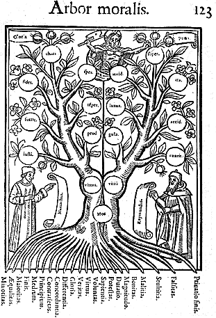
Ces éléments très sommaires de la biographie de Lulle ont été complétés par un exposé de sa vie dans l'Elucidation du Testament et dans un article de la Revue Philosophique, que l'on verra infra. Faut-il le dire ? Il est acquis que les ouvrages alchimiques attribués à Lulle sont tous des apocryphes ; on en verra la liste ci-après. Il en est donc du pseudo-Lulle comme du pseudo-Démocrite ou du pseudo-Pythagore.
Principaux ouvrages alchimiques attribués à Lulle :
Codicillus seu vade mecum, Testamentum, Mercuriorum liber, clavicula, Experimenta, Potestas divitiarum, Theoria et practica, Lapidarium, Testamentum novissimum, etc. La Clavicule se trouve dans le Theatrum chimicum et dans la Bibliotheca chemica Mangeti. Comme son nom l'indique, c'est la clef de tous les autres ouvrages du pseudo-Lulle. Voici tous les textes alchimiques que l'on attribue à Ramon Lull [d'après Michela Pereira, univ. de Sienne]
site consulté : http://www.geocities.com/Athens/Forum/5284/pseulull.html
I.1 ANGELORUM TESTAMENTUM SECRETUM ARTIS CAELESTIS DE LAPIDE MINERALI MAGNO
(Liber de lapide minerali; Testamentum ultimum secretum angelorum)Incipit/explicit: In nomine Domini Iesu Christi Virginisque Mariae ...Carole fili mi cum ad me venisti .../ ... ab omni periculo et aperto ut tibi descripsi(mus).
References: S 3, 69; HLF 274; Gl me; HMES IV, 26; TK 279
Manuscripts: Firenze, BNC, Magl. XVI.46; Firenze, BNC, Magl. XVI.53; Firenze, B. Riccardiana, 923; Mainz, Priesterseminar, s.n.(1); München, BS, clm 10493a; München, BS, clm 11031; Pesaro, B. Oliveriana, 1595 II.
Note: Divided into four books, treating `de carbunculo magno, de creatione quintae essentiae vegetabilis, de rectificatione elementorum et de compositione limorum, de ultima confectione duarum magnarum radicum'. It includes a catalogue of alchemical writings attributed to Lull. Without alphabet or figures. This text is part of a group of homogeneous alchemical works preserved in a small group of manuscripts, dating from the very end of the fifteenth century up to the eighteenth, and partly listed in a letter of 1588 recorded by M. Batllori, Records de Llull i Vilanova à Italia, "Analecta Sacra Tarraconensia 10 (1943), pp. 11-15. They include the following items: I.3, 9, 11, 14, 15, 22, 23, 24, 27, 28, 29, 31, 36, 37, 38, 40, 41, 42, 43, 46, 48, 50, 55, 58, 59, 63. Cfr. II.29, note)(I.2 APERTORIUM
(Apertorium abbreviatum; Liber lunariae)Incipit/explicit: Sapientes nostri asserunt quod tantum sit unus lapis compositum solum ex quatuor elementis (Sapientes dicunt quod non est nisi unus lapis) .../ ... secundum suam maneriem cuius causam quaeras in Testamento.
References: S 6; HLF 106; Gl kt; HMES IV, 51, 627-8; TK 1377; Singer, Catalogue, 258
Editions: Nürnberg 1546 (RD 94); Basel 1561 (RD 99); Köln1567 (RD 109)
Manucripts: Barcelona, BC, 1740; Bern, Bürgerbibl., A 78; Bologna, BU, 142(109); Bologna, BU, 169(181); Bologna, BU, 270(457) XXIII.3; Firenze, BNC, Magl. XVI.77; Leiden, BR, Voss. Chym. Q 33; London, BL, Sloane 1091; London, WML, 384; Madrid, BN, 17714; Milano, B. Ambrosiana, D 130 Inf.; Milano, B. Ambrosiana, P 148 Sup.; Modena, B. Estense, lat. 356; Modena, B. Estense, lat. 364; Modena, B. Estense, lat. 368; München, BS, clm 10590; München, BS, clm 10600; München, BS, clm 27000; Oxford, BL, Ashmole 1484; Paris, BN, lat. 14007; Torino, BU, 1314; Wien, ÖNB, 2474
Note: Theoretical and practical treatise, where the generation of the philosophers' stone is compared to the human generation. The alchemical magisterium is claimed to be effective not `per incantamentum magicae figurae', but `per naturam et de natura et etiam cum natura'. Without alphabets or figures; King Robert is cited.I.3 APERTORIUM ANIMAE ET CLAVIS TOTIUS SCIENTIAE OCCULTAE IN OMNI TRANSMUTATIONE METALLORUM
Incipit/explicit: In nomine Patris et Filii et Spiritus Sancti, o Domine Iesu Christe, ego Raymundus, miser peccator .../ ... tibi dato et care laudem Domini nostri Iesu Christi.
References: S 5; HLF 269; Gl ma; TK 491
Manuscripts: Firenze, BNC, II iii 28; Firenze, BNC, Magl. XVI. 58; Graz, Universitätsbibl., 42; Mainz, Priesterseminarbibl., s.n. (1); München, BS, clm 10493d; München, BS, clm 11032; Pesaro, B. Oliveriana, 1595 III.
Note: Alchemy has three parts: transmutation, medicine and artificial gems. Its basic principle is succum lunariae. The last chapter describes a circular figure, `De rota in qua est universum principium magisterii et de planctu naturae'.I.4 ARS CONVERSIONIS MERCURII ET SATURNI IN AURUM ET CONSERVATIONIS HUMANI CORPORIS
(Liber quatuor aquarum)Incipit/explicit: Reverendo B. salutem et pacem iuxta ritum Salvatoris. Intuita namque littera tua breviter cognovimus paupertatis te vinculo (Reverendo patri salutem ...; Venerando amico salutem ...) ... / ... si ibi non ponatur apud silvestrem oleandrum cardinalem visci squillam etc.
References: HLF 264; Gl lv; HMES IV, 629; TK 1358; Corbett I, 159
Manuscripts: Bern, Bürgerbibl., A 78; Bologna, BU, 270 (457) XII.6; Oxford, BL, Ashm. 1484; Paris, BN, lat. 12969; Wolfenbüttel, HAB, 3076; Yale, BLMC, 12
Note: It is a brief treatise on alchemical waters, perhaps linked to the Liber de secretis naturae. It is divided into four parts: `de aquarum confectione; de modo practicandi cum eis ad aurum et argentum; de confectione basilisci; de applicatione earum ad corpora humana'. Without alphabet or figures. In ms. Yale 12 there are three alternative dates for the text: 1322, 1332, 1329.I.5 ARS INTELLECTIVA
(Ars magicalis super alchimiae artem; Magica lapidis philosophorum; Magica parva)Incipit/explicit: Sunt plures nimis errantes per universum mundum (Sunt multi errantes in hoc mundo universali ...; Multi sunt erratici ...) .../ ... si scis probare per rationem quae venit ad suam proprietatem secundum cursum naturae (S: ...ergo sublima cor tuum ad omnipotentem Deum)
References: S 10; HLF 119; Gl kc, ok; HMES IV, 46, 629; TK 1542, 887; Corbett I, 190
Editions: Basel 1561 (RD 99); Köln1567 (RD 109)
Manuscripts: Bologna, BU, 270 (457) V.1; Bologna, BU, 270 (457) XXXVI.3; Bologna, BU, 524; Firenze, B. Riccardiana, 942; London, WML, 384; Madrid. BN. 17714; Madrid, BN, 18341; Mainz, Priesterseminar, s.n (2); Milano, B. Ambrosiana, G 66 Inf.; Modena, B. Estense, lat. 134; Montserrat, B. del Monastir, 205; München, BS, clm 10599; Palma, BF, 16 (2/32); Palma, CPL, 36; Palma, B. Ferran Capdebou, s. 18; Paris, BN, lat. 14008; Wien, ÖNB, 12857I.5A PRACTICA ARTIS INTELLECTIVAE
Incipit: Corruptio et depuratio fiunt simul abstrahendo partem causae ...
References: HLF 122; Gl lj; TK 271
Manuscript: London, WML, 384Note: Theoretical and practical treatise, within a conceptual framework similar to that of the Testamentum, with alphabet and tables. The author teaches `acquirere multas artes reales occultas in natura' and warns the reader that `naturam non poteris videre nec realiter possidere in forma nec in materia sine operatione'. The second part is cited as 'Cathalanica practica' in an alchemical French treatise of the fifteenth century (Oxford, ms. Digby 164; cfr. Batista y Roca, p. 15).
I.6 ARS OPERATIVA MEDICA
(Ars operativa de aquis condimentalibus et medicinalibus; Liber de aquis et oleis)Incipit/explicit: Cum ego Raymundus Ilerdae existens essem rogatus a quibusdam caris amicis ( Prologue: Domine Iesu Christe qui est vere ...) .../ ... item hoc sperma bibitum alleviat hominis membra aggravata.
References: S 11; HLF 89; Gl jx; HMES IV, 22, 631; TK 296; Singer, Catalogue, 1004; Corbett I 108
Editions: Lyone 1523 (in: Bernardi de Lavinheta Explanatio, RD 78); Basel 1561 (RD 100); Basel 1597 (RD 143); Köln1612 (in the second edition of Lavinheta, RD 168)
Manuscripts: Bologna, BU, 142 (109); Budapest, Orsz gos Sz‚ch‚nyi K"nyvt r, 202; Firenze, BML, Ashb. 1448; Firenze, BNC, II iii 27; København, KB, Gl. kgl. S 1713; LiŠge, BU, 354; London, BL, Add. 9351; London, BL, Harley, 5399; London, BL, Sloane 75; London, BL, Sloane 1091; London, WML, 117; London. WML, 520; Madrid, BN, 17714; Milano, B. Ambrosiana, D 130 Inf.; Modena, B. Estense, lat. 356; Montserrat, B. del Monastir, 482; München, BS, clm 10599; München, BS, clm 10601; Orléans, B. Municipale, 1031; Oxford, BL, Ashmole 1444; Oxford, BL, Ashmole 1484; Oxford, BL, Canon/ Misc. 195; Palma, BF, 17 (3/9); Paris, BN, lat. 7164; Paris, BN, lat. 15095; Poppi, B. Comunale, 59; Toledo, B. del Cabildo, 96-32; Vaticano, lat. 4093; Vaticano, Ottob. lat. 561; Vaticano, Pal. lat. 1187; Vaticano, Ross. lat. 576; Venezia, BNM, lat. VI.282; Verona, B. Comunale, 606; Yale, BLMC, 8; Yale, BLMC, 12
Note: Brief treatise on the medical virtues of the fifth essence, without alphabets or figures. The author introduces himself as a disciple of Arnald of Villanova and tells of a vision in which Saint Gilles, one of the four patron saints of the road to Compostella, has revealed him medical secrets.I.7 CANTILENA
Incipit/explicit: Amor me facit hoc rimare .../ ... quae sunt prudentia et charitas
References: HLF 128bis; Gl jw; HMES IV, 632; TK 92; Singer, Catalogue, 805
Editions: Basel 1572 (RD 116); Basel 1600 (RD 147); Basel 1610 (RD 164); Frankfurt 1630 (RD 202); Genève 1702 (RD 285) (all at the end of the Testamentum novissimum, all incomplete) .
Manuscripts: Oxford, BL, 465; Oxford, BL, Ashmole 1479; Oxford, BL, Digby 85.
Note: The Latin Cantilena usually follows the complete text of the Testamentum (cfr. I.61), and is often followed in its turn by the text of the Aphorismi (II.6).Yet the oldest known manuscript of the Cantilena is not Latin, but Catalan: Palma, BP 1025. The first edition of the Catalan text (J. Rosselló, Obras rimadas de Ramon Lull, 1859) lacked the last stanzas, which were integrated by the same Rosselló from the text given in ms London, BL, Sloane 419 ("Museu Balear" 1, 1875). Cfr. ORL, vol. XX, ii: Rims, ed. S. Galmes, 1938, pp. xiv-xvi and 290-293 and Carreras y Artau, Historia, II, pp. 53-54. In mss. Oxford BL 465, Oxford CCC 244, Oxford BL, Ashm. 1479 and 1483 the Catalan text is accompanied by a Latin commentary of the first ten stanzas, which clarifies the alchemical meaning of the verses (an edition of the Catalan and Latin text as given in ms Oxford CCC 244, plus the Latin commentary, is currently under press: cfr. below, I.61, note).I.8 CLAVICULA QUAE ET APERTORIUM DICITUR
Incipit/explicit: Nos appella(vi)mus hoc opus nostrum claviculam, quia sine hoc presenti libro .../ ... faeces semper abiiciendo, antequam ponatur in opere etc.
References: HLF 117; Gl lf, oh; HMES IV, 632; TK 924; Corbett I, 123; II, 96-7
Editions: Köln1579 (RD 124); Leiden 1598 (RD 145); Frankfurt 1599 (RD 146); Ursell 1602 (RD 151); Leiden 1602 (RD 152); Strasburg 1613 (RD 174); Strasburg 1659 (RD 239); Genève 1702 (RD 285)
Manuscripts: London, WML, 512; London, WML, 3557; London, WML, 3563; Milano, B. Ambrosiana, D 130 Inf.; Modena, B. Estense, lat. 357; Montpellier, B. de l'École de Médécine,474; Montpellier, B. de l'École de Médécine, 482; München, BS, clm 25110; Oxford, BL, Ashm. 766; Paris, BN, lat. 314; Paris, BN, lat. 7165; Vaticano, Urb. lat. 1444; Venezia, BNM, ital. IV.55 (5097)
Note: Theoretical and practical treatise referring to the Testamentum, with a strong religious flavour (the alchemical nigredo is compared to Christ's death). Without alphabet or figures.I.9 CLAVICULA SECRETA
(Clavis aurea de transmutatione metallorum)Incipit/explicit: Rex et fili, oportet ut habeas Mercurium duorum luminarium (S: Rex serenissime et fili carissime, volo tibi declarare altum et admirabile magisterium ...) .../ ... occultando scientiam istam et a propriis eorum filiis (S: ...cum patre et matre sua in saecula saeculorum amen)
References: S 16; HLF 270; Gl mb; HMES IV, 633; TK 1360, 1361
Manuscripts: Firenze, BNC, II iii 28; Firenze, BNC, Magl. XVI.47; Montpellier, B. de l'École de Médécine,300
Note: Maybe Salzinger referred to a different text with the same title, of which no manuscript is known today. Is is a brief alchemical practica, followed by `nomina philosophorum in libro Turbe descriptorum in laudibus que dixerunt de creatione menstrui'. [c'est ce texte que le lecteur trouvera commenté infra]I.10 CODICILLUS
(Clausula testamenti; Compendium testamenti; Thesaurus infinitus; Vademecum de numero philosophorum)Incipit/explicit: Deus in virtute trinitatis qua unitas divinitatis non laeditur .../ ... facere potes dum tamen intelligas magisterium
References: S 18; HLF 103; Gl kq2, kq3, ny; HMES IV, 633; TK 409; Singer, Catalogue, 252
Editions: Köln1563 (RD 101); Köln1572 (RD 115); Frankfurt 1630 (RD 202); Rouen 1651 (RD 232); Rouen 1663 (RD 248); Genève 1702 (RD 285)
Manuscripts: Barcelona, BC, 1728; Bern, Bürgerbibl., A 78; Bologna, BU, 270 (457) XII.8; Bologna, BU, 270 (457) XVI.5; Bruxelles, B. Royale, 3751; Cambridge, CCC, 112; Firenze, BNC, II iii 27; Firenze, BNC, Magl. XV.22; Firenze, BNC, Pal. 792; Firenze, B. Riccardiana, 691; København, KB, Gl. kgl. S 236 F; London, BL, Harley 5399; London, WML, 444;London, WML, 3563; Madrid, BN, 17721; Madrid, BN, 18341; Milano, B. Ambrosiana, R 94 Sup.; Milano, B. Ambrosiana, R 98 Sup.; Modena, B. Estense, lat. 364; München, BS, clm 10600; München, BS, clm 25110; Nantes, 523 (franç.357); Oxford, BL, Ashm. 1483; Palma, Pontificio Colegio de N. Señorade la Sapiencia, Legajos 7; Palma, BF, 16 (2/32); Palma, BF 17 (3/9); Paris, BN, lat. 7163; Paris, BN, lat. 14007; Roma, B. Casanatense, 657; Torino, BU, 1051; Vaticano, lat. 5846; Wien, ÖNB, 5485; Yale, BLMC, 12I.10A QUID SIT MATERIA LAPIDIS
Incipit: Materia siquidem nostri lapidis vel sulfuris est humor seminalis ...
References: HMES IV, 647; TK 851
Manuscript: Firenze, BNC, Pal. 792Note: One of the most important, and probably the most beautiful of the alchemical works attributed to Lull. The basic principle of nature is love, and matter is bound by 'amoris foedere'. Grounding on this universal sympathy, the author explains the alchemical practice by means of theoremata (=principles). Ch. 7 presents the two central themes: the analogy between human generation and the alchemical opus, and the need for a 'reformatio materiae', which is the final purpose of the illuminated artifex. From ch. 12 on, the four stages of the opus are described. In ch. 63 there are some probably autobiographical hints. Pseudo-Lullian texts are cited ( Testamentum and Liber de intentione alchimistarum) along with other alchemical authorities and the Hermetical Tabula Smaragdina, whose fourth proposition is extensively commented upon. Alphabet and circular figures are used, with Lullian terminology concerning the human cognitive faculties. I.10a is a chapter of the Codicillus (cfr. ed. 1702, p. 897).
I.11 COMMENTUM SUPER LAPIDEM PHILOSOPHORUM
Incipit/explicit: Precor te, omnipotens aeterne Deus, clemens .../ ... sicut iustum et aequum est in omnibus et per omnia
References: S 19; HLF 263; Gl lu; TK 1082
Manuscripts: Firenze, BNC, Magl. XVI.58; Graz, Universitätsbibl., 42; München, BS, clm 10493d; München, BS, clm 11032; Pesaro, B. Oliveriana. 1595 III
Note: Brief discussion on the principles of alchemy; for some alchemists they are two, for others they are three, according to the threefold composition of man ( corpus, spiritus, anima).I.12 COMPENDIUM ANIMAE TRANSMUTATIONIS METALLORUM
(Anima artis, Compendium super lapidarium, Lapidarius)Incipit/explicit: Fulgeat regis diadema Ruberti ...Iam saepe et saepius elocuti recolimus in multis et diversis modis .../ ... largitor existens, regnans per omnia saecula. 2nd part: Tu in virtute de A ...; 3rd part: Opus namque margaritarum ... 2nd version: Quaesivisti quis trium lapidum .../ ... elige ergo ex ea intentum.
References: S 4; HLF 115, 266; Gl ld, ld1, lx, oi; HMES IV, 626-7; TK 650, 1016, 1591; Singer, Catalogue, 253, ii, xi-xii; Corbett I, 186, 121; II, 126
Editions: Nürnberg 1546 (RD 94); Frankfurt 1550 (RD 96); Basel 1561 (RD 99); Köln1566 (RD 106); Basel 1572 (RD 116); Köln1573 (RD 119); Basel 1600 (RD 147); Ursell 1602 (RD 151); Strasburg 1613 (RD 174); Frankfurt 1630 (RD 202); Strasburg 1659 (RD 239); Rouen 1633 (RD 247); Genève 1702 (RD 285: two slightly different versions)
Manuscripts: Bern, Bürgerbibl., A 78; Bologna, BU, 164 (153); Bologna, BU, 168 (180); Bologna, BU, 169 (181); Bologna, BU, 270 (457) V.1; Bologna, BU, 270 (457) XXXIV.2; Bruxelles, B. Royale, 3751; Cambridge, CCC, 112; Cambridge, CCC, 396; Cambridge, Trinity College, 1199 (O.III.27); Cambridge, Trinity College, 1389 (O.VIII.14); Cambridge, Trinity College, 1407 (O.VIII.32); Canterbury, Cathedral Library, 50; Firenze, BML, Gaddi reliq. 174; Firenze, BNC, II iii 27; Firenze, BNC, II iii 28; Firenze, BNC, Magl. XVI.105; Firenze, B. Riccardiana, 942; Leiden, BR, Voss. Chym. O.8; Leiden, BR, Voss. Chym. Q.11; Leiden, BR, Voss. Chym. Q.33; London, BL, Harley 5399; London, BL, Sloane 419; London, WML, 444; London, WML, 525; London, WML, 526; London, WML, 3563; Mainz, Priesterseminar, s.n. (2); Milano, B. Ambrosiana. D 130 Inf.; Modena, B. Estense, lat. 134; Modena, B. Estense, lat. 356; Montpellier, B. de l'École de Médécine,493; München, BS, clm 10599; München, BS, clm 25110; Oxford, BL, 645; Oxford, BL, Ashm. 1441; Oxford, BL, Ashm. 1471; Oxford, BL, Ashm. 1484; Oxford, CCC, 244; Palma, CPL, 19; Paris, BN, lat. 7150; Paris, BN, lat. 7164; Paris, BN, lat. 14007; Paris, BN, lat. 14008; Ravenna, B. Classense, 388; Vaticano, lat. 5847; Vaticano, Pal. lat. 381; Wien, ÖNB, 2474; Wien, ÖNB, 5487; Winchester, The Warden and Fellows Library, 39; Yale, BLMC, 12
Note: It is one of the most complex pseudo-Lullian works, for what concerns its textual tradition. Its main focus is on the 'pars lapidifica' (i.e. the making of precious stones), to which it applies the fifth essence of the Liber de secretis naturae. It cites the Testamentum both in Catalan and in Latin and uses alphabet, figures and alchemical devices described in the Liber de secretis naturae.I.13 COMPENDIUM ARTIS ALCHIMIAE ET NATURALIS PHILOSOPHIAE
(Ars magica naturalis; Compendium artis magicae; Compendium de secreta transmutatione metallorum; Compendium quintae essentiae; De vero lapide; Magia minor; Magia naturalis; Parva magia; Practica magistri Raymundi de compositione lapidis philosophorum; Superadditio totius operis Raymundi Lulli)Incipit/explicit: Scias, carissime fili, naturae cursum esse reformatum (
Incipit compendium artis magicae secundum cursum naturae reformatum ...) .../ ... secundum quod medicinae fuerint in illis, vel ad album vel ad rubeum. 3rd ch.: Accipe (Recipe) nigrum nigrius nigro ...
References: S 21, 22; HLF 123, 127, 282; Gl lk, lp, mm, mm2, of; HMES IV, 48, 630-631; TK 22, 674, 1385
Editions: Nürnberg 1546 (RD 94); Köln1567 (RD 109); Basel 1610 (RD 164); Genève 1702 (RD 285)
Manuscripts: Barcelona, BC, 1740; Bern, Bürgerbibl., B 44; Bologna, BU, 142 (109); Bologna, BU, 270 (457) V.1; Bologna, BU, 270 (457) XXXVI.3; Cambridge, Trinity College, 1407; Firenze, BML, Ashb. 190; Firenze, BML, Gaddi reliq. 174; Firenze, BNC, II iii 27; Firenze, BNC, Pal. 792; Firenze, B. Riccardiana, 390; Firenze, B. Riccardiana, 942; København, KB, Gl. kgl. S. 3498; Leiden, BR, Voss. Chym. O.8; London, BL, Sloane 1091; London, WML, 443; London, WML, 444; London, WML, 526; London, WML, 3563; London, WML, 3574; Madrid, BN, 17714; Milano, B. Ambrosiana, D 130 Inf.; Milano, B. Ambrosiana, G 66 Inf.; Orléans, B. Municipale, 291; Oxford, BL, Ashm. 1484; Stuttgart, W ürttembergische Landesbibl., HB XI 48; Toledo, B. del Cabildo, 96-39; Wien, ÖNB, 5487; Wien, ÖNB, 12834; Wolfenbüttel, HAB, 3107; Yale, BLMC, 12
Note: Brief alchemical practica on the extraction of the fifth essence, which is defined as `magic' at the beginning of the text. It cites the Testamentum and Compendium animae transmutationis metallorum. Without alphabet or figures.I.14 COMPENDIUM DE SECRETIS MEDICINIS
Incipit/explicit: Rex serenissime et illustrissime, pluries a me .../ ... omnes autem pauperes tibi commendo.
References: S 20; HLF 277; Gl mh; TK 1361
Manuscripts: Firenze, BNC, XVI.49; Firenze, B. Riccardiana, 803; Oxford, BL, lat. misc. 40
Note: Medico-alchemical secrets based on the fifth essence.I.15 COMPENDIUM ET LIBER LUMEN LUMINUM DE INTENTIONE ALCHIMISTARUM
Incipit/explicit: Rex serenissime et amantissime fili, cum hoc arcanum occultae philosophiae sit secretum Dei .../ ... de proiectione quomodo dicemus.
References: S 48; HLF 276; Gl mg; HMES IV, 13-14; TK 1361
Manuscripts: Firenze, BNC, II iii 28; Firenze, BNC, Magl. XVI.55; München, BS, clm 10493b; München, BS, clm 11031; Pesaro, B. Oliveriana, 1595 II.15A DE PARVA RADICE
Incipit: In infinitum in practica sua dicemus ...
Manuscript: Firenze, BNC, II iii 28
I.15B PRACTICA DE CALCINATIONE SOLIS
Incipit: Accipe Rex serenissimum solem purum et mundum de minera ...
References: S 15; HLF 275; Gl mf
Manuscript: Firenze, BNC, II iii 28Note: Brief practica. Many alchemical authorities are cited, among whom are Plato, Saint Thomas and `magister Arnaldus'.
I.16 CONCLUSIO SUMMARIA
(Repertorium ad intelligendum Testamentum et Codicillum)Incipit/explicit: Aqua ergo (vero) nostra philosophica tribus naturis componitur .../ ... in hoc latet practica apud plures.
References: S 23; HLF 104; Gl kr; HMES IV, 51, 648; TK 118; Singer, Catalogue, 250 xi, 259
Editions: Basel 1561 (RD 99); Köln1567 (RD 109)
Manuscripts: Bern, Bürgerbibl., A 78; Bologna, BU, 168 (180); Bologna, BU, 270 (457) II.1; Cambridge, CCC, 396; Firenze, BNC, II iii 28; Firenze, BNC, Magl. XVI.59; London, BL, Sloane 1255; London, WML, 384; Modena, B. Estense, lat. 364; München, BS, clm 10600; München, BS, clm 25115; München, BS, clm 26059; Oxford, BL, Ashm. 1483; Paris, B. de l'École de Pharmacie, 33; Paris, BN, lat. 634; Paris, BN, lat. 11202; Torino, BU, 1051; Vaticano, lat. 5847; Yale, BLMC, 12
Note: Brief practica, without alphabet or figures; it does not cite any other pseudo-Lullian work.I.17 DE MEDICINIS SECRETISSIMIS
(Medicina magna)Incipit/explicit: Proponimus namque (profecto) tibi in praesenti libro (Recipe aquae benedictae quae alio nomine aqua vitae vocatur ...) .../ ... et repletione si dicta medicina bibatur.
References: S 51; HLF 88; Gl jz, km, kn; HMES IV,56; TK 1138-9
Editions: Basel 1572 (RD 116); Basel 1600 (RD 147)
Manuscripts: Cambridge, Trinity College, O. VIII. 28; Firenze, BNC, Magl. XVI.43; Firenze, BNC, Magl. XVI.76; Milano, B. Ambrosiana, D 130 Inf.; Modena, B. Estense, lat. 134; Montserrat, B. del Monastir, 482; München, BS, clm 10599; Napoli, BN, Fondo San Martino Aggiunti, 13; Oxford, BL, lat. misc. 40; Paris, B. du Musée Condé à Chantilly, 332; Paris, BN, lat. 7150; Roma, B. Corsiniana, 129; Überlingen, Leopold-Sophien Bibliothek, 160; Vaticano, lat. 5847; Vaticano, Ottob. lat. 1853; Venezia, BNM, lat. Z 325
Note: Medico-alchemical treatise linked to the Liber de secretis naturae. It contains a panacea with dozens of ingredients.I.18 DE VIGINTI QUATTUOR EXPERIMENTIS TOTIUS NATURAE CREATAE
Incipit: Raymundus volens se contristari ...(not seen)
References: S 33; HLF 308; Gl nm; HMES IV, 636; TK 1316
Manuscript: München, BS, clm 10590
Note: The only manuscript known of this text has it in addition to authentic Lullian works; also authentic works are cited inside the text, according to Salzinger.I.19 ELUCIDATIO TESTAMENTI
Incipit/explicit: Quam plurimos libros diversarum operationum .../ ... claudit et aperit, cuius nomen sit benedictum.
References: S 29; HLF 105; Gl ks; HMES IV, 24 n.69; TK 1162
Editions: Basel 1572 (RD 116); Basel 1600 (RD 147); Genève1702 (RD 285)
Manuscripts: Dresden, SächsischeLandesbibl., N 177; Firenze, B. Riccardiana, 942; Leiden, BR, Voss. Chym. F 29; Leiden, BR, Voss. Chym. Q 33; London, WML, 3557; London, WML, 3563; Montserrat, B. del Monastir, 482; San Marino (California), H.E. Huntington Library, s.n.; Wolfenbüttel, HAB, 3144; Wolfenbüttel, HAB, 3641
Note: Brief treatise, whose author claims to simplify the theoretical part of the Testamentum. It insists on the uniqueness of the stone and the simplicity of the alchemical opus. Not to be confused with the Lucidarium Testamenti. [texte que l'on trouvera commenté dans l'Elucidation]I.20 EPISTOLA ACCURTATIONIS
(Epistola accurtatoria lapidis ad Robertum Anglorum regem)Incipit/explicit: Cum ego Raymundus de insula Maioricarum .../ ... cuius nomen benedictum sit in aeternum.
References: S 31; HLF 112; Gl kz; HMES IV, 24, 623, 625; TK 296; Singer, Catalogue, 250; Corbett I, 190, 270
Editions: Köln1567 (RD 110); Basel 1572 (RD 116); Basel 1600 (RD 147); Genève1702 (RD 285)
Manuscripts: Bern, Bürgerbibl., A 78; Bethlehem (Penn.), Lehigh University Library, 1; Bologna, BU, 138 (104); Bologna, BU, 142 (109); Bologna, BU, 164 (153); Bologna, BU 270 (457) V.1; Bologna, BU 270 (457) XXXIII.3; Bologna, BU, 270 (457) XXXVI.3; Boston, Medical Library, 18; Cambridge, CCC, 112; Cambridge, Trinity College, 1199; Edinburgh, Univeristy Library, 141; Firenze, BML, Gaddi reliq. 174; Firenze, BNC, II iii 27; Firenze, BNC, Magl. XVI.25; Firenze, BNC, Pal. 792; Firenze, BNC, Pal. 1051; Firenze, B. Riccardiana, 390; Firenze, B. Riccardiana, 942; Kassel, Landesbibl., Chem. Folio 13; København, KB, Gl. kgl. 1713; København, KB, Gl. kgl. S 3498; Leiden, BR, Voss. Chym. O.5; Leiden, BR, Voss. Chym. O.8; Leiden, BR, Voss. Chym. Q.2; Leiden, BR, Voss. Chym. Q.33; London, BL, Sloane 1118; London, BL, Sloane 3457; London, WML, 384; London, WML, 385; London, WML, 444; London, WML, 450; London, WML, 3563; Madrid, BN, 7443; Modena. B. Estense, lat. 364; München, BS, clm 10590; München, BS, clm 10600; München, BS, clm 24111; Oxford, BL, Ashm. 1047; Oxford, BL, Ashm. 1471; Oxford, BL, Ashm. 1480; Oxford, BL, Ashm. 1484; Paris, BN, lat. 14008; Paris, BN, franç.2018; Paris, BN, franç.19960; Poppi, B. Comunale, 59; Reggio Emilia, B. Municipale, MS vari E 10; Rimini, B. Civica Gambalunghiana, 88; Toledo, B. del Cabildo, 96-32; Vaticano, lat. 5847; Wien, ÖNB, 2474; Wien, ÖNB 5230; Wien, ÖNB 5487; Wien, ÖNB, 5509; Wien, ÖNB, 5510; Wolfenbüttel, HAB, 3076; Wolfenbüttel, HAB, 3284; Wolfenbüttel, HAB, 3641; Yale, BLMC, 12; Yale, BLMC, 19
Note: One of the most famous and widespread works of the pseudo-Lullian alchemical corpus. It is a brief practica, concerning three kinds of lapis: ( mineralis, vegetalis, animalis). It shows the only way to shorten the operative process, which is accomplished by means of various fifth essences (f.e. vitrioli, f.e. aquae ardentis etc.). It bears an explicit attribution to Lull (cfr. Incipit) and it is dedicated to king Robert. It contains an alphabet and seems to cite the Liber de conservatione vitae humanae. It is in turn cited in the Liber de secretis naturae.I.21 EXPERIMENTA
Incipit/explicit: Ego Raymundus Lullus de insula Maioricarum ...(I) Accipe tartarum utriusque vini, tam albi quam rubei .../ ... praesens opusculum optato fine claudatur.
References: S 32; HLF 110; Gl kx, ve; HMES IV, 60, 636; TK 25, 491; Corbett II, 110
Editions: Basel 1572 (RD 116); Basel 1600 (RD 147); Genève1702 (RD 285)
Manuscripts: Bologna, BU, 142 (109); Erlangen, Universitätsbibl., lat. 871; Firenze, BNC, Magl. XVI.43; Kassel, Landesbibl., Chem. Quarto 34; London, WML, 452; London, WML, 3563; Milano, B. Ambrosiana, D 130 Inf.; Montpellier, B. de l'École de Médécine,482; München, BS, clm 10590; Wien, ÖNB, 11378
Note: Thirty-four alchemical experiments, drawn from various pseudo-Lullian and Arnaldian works. Without alphabets or figures.I.22 FONS SCIENTIAE DIVINAE PHILOSOPHIAE
Incipit/explicit: Serenissimi reges amantissimi et catholici ... A me quaesivisti ut aliqua ex secretis meis .../ ... quoniam in illis videbitis veritatem.
References: S 34; HLF 285; Gl kl; TK 1438
Manuscripts: Firenze, BNC, Magl. XVI.45; Graz, Universitätsbibl., 42; München, BS, clm 10493d; München, BS, clm 11032; Pesaro, B. Oliveriana, 1595 III
Note: Alchemy is compared to Adam's wisdom and the alchemical spirit to the Spiritus domini who floated over the waters at the beginning of the creation.I.23 HISTORIA QUANDO RAYMUNDUS LULLUS, MAIORICANUS COMES, SCIENTIAM TRANSMUTATIONIS DIDICERIT ET QUANDO AC QUA DE CAUSA TRAIECERIT IN ANGLIAM AD REGEM ROBERTUM
Incipit/explicit: In nomine domini Iesu Christi ego Raymundus Lullus .../ ... et occultaverunt omnia secreta naturae.
References S 36; HLF 261; Gl ls; TK 491
Edition: M. Pereira, La leggenda di Lullo alchimista, "Estudios Lulianos" 27 (1987), pp. 145-163.
Manuscripts: Firenze, BNC, Magl. XVI.50; Graz, Universitätsbibl., 42; München, BS, clm 10493d; München, BS, clm 11032; Pesaro, B. Oliveriana, 1595 III
Note: One of the latest, and the most complete version of the legend of Lull the alchemist.I.24 LAPIDARIUM ULTIMUM SECRETISSIMUM
Incipit/explicit: O clemens Domine Deus magne qui caelum et terram .../ ... contra serpentes et bestias malas.
References: S 40; HLF 291; Gl mu
Manuscript: Firenze, BNC, Magl. XVI.53
Note: Late elaboration on the making of artificial gems; it is cited in the Liber angelorum de conservatione vitae humanae.I.25 LIBELLUS DE MERCURIO SOLO
Incipit/explicit: Est lapis unus, medicina una in qua magisterium .../ ... et praestat ei faciem iuvenilem, ut scribitur in libro Pietatis.
References: HLF 109; Gl kw; HMES IV, 644; TK 511; Singer, Catalogue, 508
Edition: Basel 1561 (RD 99)
Manuscript: Napoli, BN, VIII.D.17
Note: Quicksilver is the only matter required for the alchemical opus: the philosophers' stone is made by uniting mercurium calcinatum (hot and dry) and mercurium sublimatum (cold and moist). Without citations from other works of the pseudo-Lullian corpus, alphabet or figures.I.26 LIBER AD FACIENDUM AURUM POTABILE
(De compositione et virtutibus auri potabilis)Incipit/explicit: Fili doctrinae, postquam ego Raymundus Lullus vobis declaravi quod .../ ... atque in illius multiplicatione in quantitate in huius tractatus consummatione.
References: S 14; HLF 272; Gl mc; HMES IV, 57, 632; TK 559
Manuscripts: Cambridge, CCC, 99; London, BL, Sloane 1091; Manchester, John Rylands Library, lat. 65; Paris, BN, lat. 7150; Vaticano, lat. 5847
Note: The potable gold is the most perfect medicine, also defined 'humidum radicale' inside the text. Recipes to obtain it, maybe linked to this text, are recorded by Thorndike, HMES IV, 58, 632. Other similar recipes are to be found in Firenze, BNC, II iii 28 ( Secretum Dei Altissimi de auro potabile); Milano, B. Ambrosiana, C 12 Sup. ( Ad aurum potabile). A series of brief treatises on this subject is in MS Palma, BF, 17 (3/9). Cfr. I.54.I.27 LIBER AD SERENISSIMAM REGINAM ELEONORAM
Incipit/explicit: Beatissimus Deus sempiternus creator arcanorum .../ ...et fac magisterium narratum.
References: S 59; HLF 303; Gl ng; TK 174
Manuscripts: Firenze, BNC, Magl. XVI.56; München, BS, clm 10493b; München, BS, clm 11031; Pesaro, B. Oliveriana, 1595 I
Note: Alchemical secrets for cosmetic use and for making artificial pearls.I.28 LIBER ANGELORUM DE CONSERVATIONE VITAE HUMANAE ET DE QUINTA ESSENTIA
Incipit/explicit: Deus gloriosissimus, Deus altissimus, Deus magnus .../... viduarum ac templorum Dei sacrorum.
References: S 2; HLF 287; Gl mq; TK 408
Manuscripts: Firenze, BNC, II iii 28; Firenze, BNC, Magl. XVI.51; Graz, Universitätsbibl., 42; München, BS, clm 10493d; München, BS, clm 11032; Pesaro, B. Oliveriana, 1595 III; Wien, ÖNB, 11282
Note: Medico-alchemical work on the fifth essence of wine. The alchemical opus has religious meaning and must be undertaken for the benefit of the poor.I.29 LIBER ANGELORUM TESTAMENTI EXPERIMENTORUM
(Liber magnorum experimentorum)Incipit/explicit: Adoro te Deus pater omnipotens .../ ... facies praecepta Domini nostri Iesu Christi.
References: S 1; HLF 288; Gl. mr; TK 68
Manuscripts: Firenze, BNC, Magl. XVI.54; Mainz, Priesterseminar, s.n. (1); München, BS, clm 10493b; München, BS, clm 11031; Pesaro, B. Oliveriana, 1595 I; Vaticano, Barb. lat. 215
Note: The experiments are generally derived from the Testamentum, of which this text is a late reworking. First matter is identified with urine. The religious framework is stressed by the repeated mention of the angels and by the definition of the alchemist as `verus Dei sacerdos'.I.30 LIBER ARTIS COMPENDIOSAE QUI VADEMECUM NUNCUPATUR
Incipit/explicit: Tinctura ignis est melior omnibus tincturis .../ ... combustibile et corporale ex vi suae propriae naturae.
References: S 12; HLF 111; Gl ky; HMES IV, 61; TK 1573
Editions: Frankfurt 1550 (RD 96); Basel 1572 (RD 116); Basel 1600 (RD 147); Genève 1701 (RD 285)
Manuscripts: Firenze, BNC, Magl. XVI.47; Firenze, B. Riccardiana, 923; Montserrat, B. del Monastir, 482 int. VII; Oxford, BL, Ashm. 1480; Paris, B. de l'Arsenal, 3019 int. III
Note: A brief summary of the Theorica Testamenti.I.31 LIBER CAELESTIS
(Thesaurus thesaurorum)Incipit/explicit: Fili carissime, esto semper humilis .../ ... ut omnia facias cum suo adiutorio.
References: S 76; HLF 290; Gl mt
Manuscripts: Firenze, BNC, II iii 28; Firenze, BNC, Magl. XVI.50; München, BS, clm10493c; München, BS, clm 11032; Pesaro, B. Oliveriana, 1595 IV
Note: Knowledge necessary to the alchemist who makes `spiritum vegetabilem, sicut mulier infantem in utero generat operante natura'. With a brief history of kings and philosophers who learnt alchemy.I.32 LIBER DE CONSERVATIONE VITAE HUMANAE
Incipit/explicit: Intendimus (intendo) componere rem admirabilem tactam .../ ... nisi in vero auro puro de minera creato iussu ipsius Dei.
References: S 24; HLF 91; Gl iu; HMES IV, 634; TK 757
Edition: Strasburg 1616 (RD 179)
Manuscripts: Firenze, B. Riccardiana, 942; Kraków, B. Jagiellonska, 839; Modena, B. Estense, lat. 134; Modena, B. Estense, lat. 354; München, BS, clm 10599; Padova, B. Antoniana, XXIII, 617; Paris, BN, lat. 15096; Wien, ÖNB, 11342
Note: It is a medical treatise, without specifically alchemical themes. It teaches to preserve and restore youth `per conservationem spirituum caloris in suo esse et temperantia' and is similar to R. Bacon, De conservatione iuventutis. Cfr. also the incipit of the treatise De vita philosophorum, attributed to Arnald of Villanova (ed. A. Calvet, "Chrysopoeia" IV, 1990-91).I.33 LIBER DE INTENTIONE ALCHIMISTARUM
(Donum Dei)Incipit/explicit: Laus sit Deo qui gratiam nobis contulit ...Posteaquam per valde longum tempus nostram vitam exercuimus .../ ...reddimus et committimus in praesentem custodiam.
References: S 37; HKF 107; Gl ku; HMES IV, 49, 635, 638; TK 1066, 1206
Edition: Basel 1561 (RD 99)
Manuscripts: Bern, Bürgerbibl., A 78; Bologna, BU, 271 (458); Firenze, BNC, II iii 27; London, WML, 384; Manchester, John Rylands Library, lat. 65; Oxford, BL, Digby 162; Überlingen, Leopold-Sophien Bibl., 160; Vaticano, lat. 5846; Venezia, BNM, lat. VI. 215; Wien, ÖNB, 11342
Note: This work is cited by the author of the Testamentum as written by himself but it does not include alphabet nor figures. According to HMES III, p. 626, it might be the work of a certain Bernardus: it also shows some similarities to the alchemical work written by Bernard of Treviri. The alchemist tells of his wanderings and of the quest for the 'lapis philosophorum' that he made with three socii: a theologian, an 'eques et doctor in legibus' and a merchant. The title Donum Dei recalls a homonym work of John Dastin.I.34 LIBER DE INVESTIGATIONE SECRETI OCCULTI
(Clausula testamenti; Tractatus scrutationis seu investigationis secretorum; Vademecum)Incipit/explicit: Quia homo est magis nobile animal de mundo ...Alchimia est ars artificialis ex naturalibus principiis procedens .../ ...de igne communi in tripode secreti. 2nd part: Ista est secunda pars huius libri quae est de alphabeto ...; 3rd part: Ista est tertia pars quae est de practica huius secreti ...
References: S 38; HLF 283, 284; Gl mn,mo; HMES IV, 9, 54, 638-9, 640; TK 779, 1219; Singer, Catalogue, 252, 254
Edition: M. Pereira, Un lapidario alchemico: il 'Liber de investigatione secreti occulti' attribuito a Raimondo Lullo. Studio introduttivo ed edizione, "Documenti e Studi sulla Tradizione Filosofica Medievale" I,2 (1990), pp. 549-603.
Manuscripts: Bern, Bürgerbibl., A 78; Bologna, BU, 142 (109); Bologna, BU, 168 (180); Bologna, BU, 270 (457) II.1; Bologna, BU, 270 (457) V.1; Bologna, BU, 270 (457) XXXVI.3; Budapest, Országos Széchényi Könyvtár, 202; Firenze, BNC, II iii 27; Firenze, BNC, Magl. XVI.133; Firenze, B. Riccardiana, 942; København, KB, Gl. kgl. S. 236; Leiden, BR, Voss. Chym. O 3; London, BL, Harley 5399; London, BL, Sloane 2128; London, WML, 526; Milano, B. Ambrosiana, D 130 Inf.; Modena, B. Estense, lat. 364; München, BS, clm 10600; Orléans, B. Municipale, 291; Oxford, BL, Ashm. 1484; Palma, BF, 17 (3/9); Paris, BN, lat. 7163; Parma, B. Palatina, 1427; Vaticano, lat. 5847; Vaticano, Capponiani lat. 254; Venezia, BNM, lat. VI. 215; Wien, ÖNB, 2474; Wien, ÖNB, 5485; Yale, BLMC, 12
Note: It is one of the most interesting texts of the corpus. Remarkable Lullian elements are present: not only figures, a tree and an alphabet, but also conceptual devices as the correlatives. Alchemy, meant as the lapis or principle of transmutation, is the secret which cannot be produced by nature alone; it needs man's work, artificium. The philosophers' stone is vegetable, animal and mineral; its purpose is generation, and therefore it must be generated out of living beings (`de substanciis vivis'). The true principle of alchemy is man's urine. The practical part of this treatise is an 'ars lapidifica' very near to that described in the Liber lapidarii and in the Compendium animae transmutationis metallorum, but using urine as first matter, instead of alchemical waters or the fifth essence of wine.I.35 LIBER DE LAPIDE ET OLEO PHILOSOPHORUM
Incipit/explicit: Si vis facere aquam vitae .../ ...corporum et spirituum secundum Raymundum Lullium dicta sufficiant.
References: S 43; HLF 120; Gl lh; TK 1470
Editions: Basel 1610 (RD 164); Genève 1702 (RD 285)
Manuscripts: Firenze, B. Riccardiana, 390; Paris, BN, franç.19069; Toledo, B. del Cabildo, 96-39
Note: Brief practica, concerning the perfect 'aqua vitae'. There are neither alphabets nor figures nor specific Lullian procedures. In MS Riccardiana 390 it seems to be considered a chapter of the Potestas divitiarum (cfr. I.56).I.36 LIBER DE MODO SUBLIMANDI VIVUM ARGENTUM
Incipit/explicit: Omnipotens sempiterne Deus fortis et potens .../ ...vivit et regnat in saecula saeculorum amen.
References: S 53; HLF 295; Gl my; TK 944
Manuscripts: Firenze, BNC, Magl. XVI.58; München, BS, clm 10493c; München, BS, clm 11032; Pesaro, B. Oliveriana, 1595 IV
Note: Brief practica which teaches to extract 'argentum vivum' from cinnabar.I.37 LIBER DE PRAEPARATIONE HOMINIS PRO MAIORI OPERE CREATIONIS TOTIUS NATURAE ANIMALIS
Incipit/explicit: Fili carissime et princeps serenissime, maximum arcanum tibi volo revelare ...O Domine, Jesu Christe, qui in hoc mundo venisti .../ ...et erit aqua perfecta pro separatione hominis.
References S 58; HLF 307; Gl nl
Manuscripts: Firenze, BNC, II iii 28; Firenze, BNC, Magl. XVI.61
Note: The stone extracted from the human body is stronger and more perfect than 'lapis vegetabilis'. Man must be prepared with remedies and diet in order to obtain a pure human stone.I.38 LIBER DE SACRATA SCIENTIA BEATI JOANNIS EVANGELISTAE
Incipit/explicit: Carissimi fratres, Deus magnus, Deus caritatis, Deus pius et misericors in hoc demonstravit caritatem suam .../ ...tradi nocentium et dirum crucis subire tormenti.
References: S 61; HLF 273; Gl md
Manuscripts: Firenze, BNC, Magl. XVI.57; München, BS, clm 10493c; München, BS, clm 11032; Pesaro, B. Oliveriana, 1595 IV
Note: Mystical text on the fifth essence. Alchemy is the true and noblest philosophy. With an alchemical figure.I.39 LIBER DE SECRETIS NATURAE SEU DE QUINTA ESSENTIA
Incipit/explicit: Contristatus erat Raymundus ...Deus gloriosus, cum tuae sublimis bonitatis ...Ordimur namque tibi fili .../ ...Christi custodire commendavit. 3rd part: Haec est tertia distinctio ...
References: S 13, 27, 66; HLF 114, 124; Gl jv, lc, lm, ml, oj; HMES IV, 39, 648; TK 263, 408, 602, 1018; Singer, Catalogue, 255; Corbett I, 136
Editions(all editions are incomplete): Venezia 1514 (RD 50); Augsburg 1518 (RD 71); Venezia 1521 (RD 77); Lyone 1535 (RD 85); Strasburg 1541 (RD 91); Venezia 1542 (RD 92); Nürnberg 1546 (RD 94); Basel 1562 (RD 99); Köln 1567 (RD 110); Ursell 1602 (RD 151); Strasburg 1613 (RD 174); Strasburg 1616 (RD 179); Strasburg 1659 (RD 239); M. Pereira, Filosofia naturale lulliana e alchimia. Con l'inedito epilogo del 'Liber de secretis naturae seu de quinta essentia', "Rivista di Storia della Filosofia" 41 (1986), pp. 747-780.
Manuscripts: Barcelona, BC, 1727; Barcelona, BC, 1740; Bern, Bürgerbibl.,A 78; Bethlehem (Penn.), Lehigh University Library, 1; Bologna, BU, 142 (109); Bologna. BU, 168 (180); Bologna, BU, 169 (181); Bologna, BU, 270 (457) V.2; Bologna, BU, 270 (457) XII.6; Brrokland D.C., Holy Name College, 16; Cambridge, CCC, 112; Cambridge, CCC, 395; Cambridge, CCC, 396; Cambridge, Trinity College, 1199; Cambridge, Trinity College, 1407; Canterbury, Cathedral Library, 50; Firenze, BNC, II iii 27; Firenze, BNC, Magl. XV.22; Firenze, BNC, Magl. XVI.40; Firenze, BNC, Magl. XVI. 133; Firenze, BNC, Pal. 792; Firenze, BNC, Pal. 948; Leiden, BR, Voss. Chym. Q 33; London, BL, Harley 5399; London, BL, Sloane 75; London, BL, Sloane 1091; London, BL, Sloane 2170; London, BL, Sloane 3604; London, WML, 186; London, WML, 452; Madrid, B. de la Academia de la Historia, 9-31-8-7117; Madrid, BN, 7443; Mainz, Priesterseminar, 220; Milano, B. Ambrosiana, D 216 Inf.; Milano, B. Ambrosiana, D 512 Inf.; Modena, B. Estense, lat. 355; Modena, B. Estense, lat. 364; Montpellier, B. de l'École de Médécine,479; München, BS, clm 10573; München, BS, clm 24111; Oxford, BL, 645; Oxford, BL, 879; Oxford, BL, Ashm. 1437; Oxford, BL, Ashm. 1471; Oxford, BL, Ashm. 1484; Oxford, CCC, 244; Palma, BF, 17 (3/9); Palma, CPL, 2; Palma, B. Vivot, s.s. (Papeles varios, 4); Paris, B. Mazarine, 3501; Paris, BN, lat. 7164; Paris, BN, lat. 7167; Paris, BN, lat. 7177; Paris, BN, lat. 12969; Paris, BN, 14008; Reggio Emilia, B. Municipale, Mss. vari E 10; Vaticano, Reg. lat. 1468; Vaticano, Ross. lat. 576; Vicenza, B. Comunale Bertoliniana, 328; Wien, ÖNB, 5485; Wien, ÖNB, 5509; Wien, ÖNB 11333; Wien, ÖNB, 11342; Wien, ÖNB, 12834; Wolfenbüttel, HAB, 3284; Yale, BLMC, 12
I.39A DE CURA INDIVIDUORUM
Incipit: Ista est regula infrascripta datur de lineis quae oriuntur ...
Reference: TK 781
Manuscripts: Bruxelles, B. Royale, 3751; London, WML, 443; Vaticano, lat. 5847I.39B TRACTATUS SEPTEM ROTARUM QUARUM SEX SUNT VOLUBILES
Incipit: Protinus ut ars et scientia transmutatoria de qua in praecedenti volumine edisseruimus ...
References: S 60; HLF 280; Gl mk; TK 1145; Singer, Catalogue, 246-7
Manuscripts: Bern, Bürgerbibl., B 44; Bruxelles, B. Royale, 3751; Cambridge, CCC, 112; Canterbury, Cathedral Library, 50; Mainz, Priesterseminar, 220; München, BS, clm 10576Note: It is one of the two basic works (with the Testamentum) of the pseudo-Lullian alchemical corpus. It is linked to the Liber de consideratione quintae essentiae written by John of Rupescissa around 1351-52, and concerns alchemy in its threefold division: medical, transmutatory and lapidifica. It was the main vehicle for the diffusion of the alchemical practice based on the fifth essence of wine. The third distinction circulated as an independent text, sometimes with the title listed under I.39a. The relation of I.39b to the main text is more uncertain.
I.40 LIBER DE SECRETO OCCULTO NATURAE CAELESTIS
Incipit/explicit: Fili carissime et amantissime, gloriosus Dominus Deus ordinavit quod quintam essentiam .../ ...in mentem tuam, ut omnia facias sicut tibi praecepimus.
References: S 63; HLF 289; Gl ms; TK 559
Manuscripts: Firenze, BNC, II iii 28; Firenze, BNC, Magl. XVI.45; Graz, Universitätsbibl., 42; Mainz, Priesterseminar, s.n. (1); München, BS, clm 10493d; München, BS, clm 11032; Pesaro, B. Oliveriana, 1595 III
Note: On the fifth essence, against the wicked alchemists who ignore the true 'argentum vivum'. Without alphabets or figures.I.41 LIBER DE SECRETO OCCULTO SALIS URINAE
Incipit/explicit: Rex illustrissime et serenissime .../ ...qui continet in se omnem perfectionem et fortissimus et super omnia in terris.
References: S 62; HLF 265; Gl lw; TK 1360
Manuscript: Firenze, BNC, Magl. XVI. 58
Note: The distillation of urine is described.I.42 LIBER DE SECRETO SECUNDO LAPIDIS PHILOSOPHICI
Incipit/explicit: Gravissime vir Roberte ...Est autem alius modus nobilior transmutandi .../ ... tibi dicta in annis tribus cum Dei vountate.
References: S 65; HLF 262; Gl lt; TK 506, 591
Manuscripts: Firenze, BNC, II iii 28; Firenze, BNC, Magl. XVI. 45; Mainz, Priesterseminar, s.n. (1)
Note: Alchemical procedures to obtain the philosophers' stone, here called 'ovum philosophorum', through three kinds of sulphur (animal, vegetal and mineral).I.43 LIBER DE VASIS MAGNO MAGISTERIO OPPORTUNIS
Incipit/explicit: Fili carissime, sequens vas est illud cum quo aquam vitae facere .../ ... de quo habes particularem tractatum in arte maiori necessaria.
References: S 77; HKF 297; Gl na; TK 559
Manuscripts: Firenze, BNC, II iii 28; Firenze, BNC, Magl. XVI.55
Note: Vessels to be used in the various alchemical operations. MS II iii 28 has beautiful illustrations of several vessels.I.44 LIBER DIVINITATIS
Incipit/explicit: Laus Deo, sint gratiae bonitatis, pietatis et misericordiae, qui donavit nobis rem .../ ...fructum rubedinis et claritatis.
References: S 28; HLF 271; Gl kk; TK 812, 813
Manuscripts: Modena, B. Estense, lat. 364; München, BS, clm 10600; Paris, BN, lat. 7161; Vaticano, lat. 10811
Note: Mystical secrets of alchemy.I.45 LIBER LAPIDARII
(Liber de compositione lapidis mineralis; Practica lapidum pretiosorum)Incipit/explicit: Deus in veritate tua incipio in primis tractare generationem lapidum (Deus in virtute tuae sanctae trinitatis incipio tractare ...) ...Et primo fili tibi dicemus (Et fili primo indiges ...) .../ ...istam aquam potes custodire semper. 2nd part: Tu fili in virtute sanctae trinitatis accipias de aqua mercurii ... Version abridged at the beginning: Omissis praeambulis necessariis ...
References: S 42; HLF 113; Gl la, lb; HMES IV, 640-642, 645; TK 409, 517
Editions: Basel 1610 (RD 164)
Manuscripts: Bern, Bürgerbibl., A 78; Bologna, BU, 20 (12) I.9; Cambridge, CCC, 112; Firenze, BML, Ashb. 190; Firenze, BNC, II iii 27; Genève, B. Publique et Universitaire, lat. 82; London, WML, 444; London, WML, 526; Modena, B. Estense, lat. 134; München, BS, clm 10599; Oxford, BL, Ashm. 1471; Oxford, BL, Ashm, 1483; Oxford, BL, Ashm. 1484; Oxford, CCC, 244; Paris, BN, lat. 7150; Toledo, B. del Cabildo, 96-39; Vaticano, Pal. lat. 381; Wien, ÖNB, 5230; Wien, ÖNB, 5487; Wien, ÖNB, 5509; Wolfenbüttel, HAB, 3076; Yale, BLMC, 12
Note: One of the most ancient works of the corpus, explicitly linked to the Testamentum, but without alphabet or figures. It concerns the making of artificial gems using three principles: 'argentum vivum, aquae subtiles, virtutes stellarum'. It gives an accurate account of the difference between alchemy as transmutatory art and alchemy as lapidifica in the chapter `De generatione lapidis et de diversitate sui operis'.I.46 LIBER LUCIDARIUS COMPOSITUS SUPER ULTIMO TESTAMENTO
Incipit/explicit: Rex serenissime et amantissime fili, pluries ac pluries me rogasti .../ ...completo de hoc auro potabili soluto pro medicinis creandis.
References: S 44; HLF 293; Gl mw; HMES IV, 13-14; TK 1361
Manuscripts: Firenze, BNC, II iii 28; Firenze, BNC, Magl. XVI.55
Note: Treatise on potable gold, linked to the Testamentum novissimum.I.47 LIBER LUCIS MERCURIORUM
Incipit/explicit: Iamdudum rex serenissime de transmutatione metallorum locuti sumus ...In virtute de A accipe B album odoriferum .../ ...et ad finem gaudia aeternalia possidebis.
References: S 46; HLF 116; Gl le, oa; HMES IV, 642; TK 648
Editions: Basel 1572 (RD 116); Basel 1600 (RD 147); Genève 1702 (RD 285)
Manuscripts: Bologna, BU, 142 (109); Firenze, BNC, II iii 28; Firenze, Magl. XVI.40; Firenze, BNC, Magl. XVI,105; Firenze, BNC, Magl. XVI.133; Firenze, B. Riccardiana, 942; Milano, B. Ambrosiana, R 118 Sup.; Modena, B. Estense, lat. 134; Montserrat, B. del Monastir, 482; München, BS, clm 10590; München, BS, clm 10599; München, BS, clm 25103; Oxford, BL, Ashm. 1450; Padova, BU, 1380; Paris, BN, nouv. acquis. lat. 634; Paris, BN, franç.14798; Philadelphia, University of Pennsylvania Library, 1; Vaticano, lat. 5847; Wien, ÖNB, 5485
Note: Practical summary for the composition of 'menstruum vegetabile', mainly related to the Testamentum and Codicillus.I.48 LIBER NATURAE ET LUMEN NOSTRI LAPIDIS
Incipit/explicit: Rex scias quod spiritus domini ferebatur super aquas .../ ...quoniam viso nobis me traditurum omnia secreta sibi.
References: S 54; HLF 298; Gl nb; HMES IV, 12; TK 1361
Manuscripts: Firenze, BNC, II iii 28; Firenze, BNC, Magl. XVI.51
Note: Theory of transmutation and its links with cosmological themes.I.49 LIBER SECRETI SECRETORUM
(Alphabetum divinum de lapide minerali et de definitione alchimiae; Practica testamenti)Incipit:explicit: Rex serenissime et amantissime fili, divina potentia omnia ordinavit .../ ...et sic est finita specificatio primae tabulae ad laudem Dei.
References: S 64; HLF 129; Gl lz; TK 1361
Edition: Köln1592 (RD 139)
Manuscripts: El Escorial, g.II.5; München, BS, clm 25105; München, BS, clm 27434; Oxford, BL, Ashm. 1451; Palma, BF, (3/25); Reggio Emilia, B. Municipale, MSS vari F 82; Roma, B. Casanatense, 3567
Note: It is a miscellaneous text, linked to the Liber de conservationae vitae humanae (I.32) and to Hermetic works. In some manuscripts it is confused with the second part of the Testamentum (cfr. also II.41).I.50 LIBER SPONSALITII
Incipit/explicit: Fili, omnes sapientes occultaverunt secreta naturae .../ ...per Christum dominum nostrum.
References: S 67; HLF 296; Gl mz; TK 560
Manuscripts: Firenze, BNC, II iii 28; Firenze, BNC, Magl. XVI.57; Graz, Universitätsbibl., 42; München, BS, clm 10493d; München, BS, clm 11032; Pesaro, B. Oliveriana, 1595 III
Note: The alchemical wedding , concealed by the ancient wise men, are now revealed. The text also gives a list of alchemists beginning from Adam.I.51 LUCIDARIUM TESTAMENTI AD REGEM EDOARDUM
(Elucidatio testamenti ad regem Angliae; Practica quae dicitur secunda pars apertorii)Incipit/explicit: Tu in virtute Dei (de A; ipsius A) recipe solem calcinatum vel foliatum .../ ...in perpetuum et secum tingere in infinitum.
References: S 45; HLF 294; Gl mx; HMES IV, 636; TK 1590-91
Edition: Basel 1610 (RD 164)
Manuscripts: Bologna, BU, 169 (181); El Escorial, f.I. 10; London, WML, 3557; London, WML, 3563; Modena, B. Estense, lat. 364; Montpellier, B. de l'École de Médécine,469; Montpellier, B. de l'École de Médécine,474; Montpellier, B. de l'École de Médécine,493; München, BS, clm 10600; Oxford, BL, Ashm. 1490; Toledo, B. del Cabildo, 96-39; Vaticano, lat. 5847; Venezia, BNM, lat. VI.215
Note: Often confused with the Elucidatio testamenti (I.19), from which it is quite different. It is a practical treatise which describes four ways to obtain the philosophers' stone, referring to various chapters of the Testamentum. Two recipes of 'tincturae particulares', one of which begins: `Recipe nigrum nigrius nigro', are recorded at the end of the text.I.52 LUMEN CLARITATIS ET FLOS FLORUM
Incipit/explicit: Tempore serenissimi Roberti Anglorum regis .../ ...et paratus sum semper oboedire mandatis tuis.
References: S 47; HLF 267; Gl ly; TK 1559
Manuscript: Firenze, BNC, Magl. XVI.50
Note: A late version of the legend of Lull the alchemist, with a dialogue about the truth of alchemy.I.53 MAGNA CLAVIS
(Magnum apertorium; Noli ire sine me)Incipit/explicit: Ad reddendum gratias ...Nos volumus incipere et ponere in scripto scientiam et artem praesentem .../ ...cum modica parte corporum imperfectorum fiunt lapides pretiosi.
References : S 17; HLF 268; Gl lz
Manuscripts: Barcelona, BC, 686; Montserrat, B. del Monastir, 205; Montserrat, B. del Monastir, 482; München, BS, clm 10493c; München, BS, clm 11032; Palma, B. Ayamans, s.n.; Palma, BF, 16 (2/32); Palma, CPL, 16; Palma, CPL, 18; Palma, CPL, 19; Palma, CPL, 36; Pesaro, B. Oliveriana, 1595 IV
Note: Practical treatise concerning the fifth essence and the 'terra azoquea'.I.54 MODUS ACCIPIENDI AURUM POTABILE
Incipit/explicit: Dico igitur primo quod aurum potabile .../ ...sanitatis conservationem exhibuit.
References: HLF 120; Gl lo; TK 423
Edition: Basel 1610 (RD 164)
Manuscripts: Toledo, B. del Cabildo, 96-39; Vaticano, Pal. lat. 381
Note: Cfr. other texts on potable gold (I.26 Note).I.55 OPUS ABBREVIATUM SUPER SOLEM ET LUNAM
Incipit/explicit: Deus qui in trinitate semper gaudes ...Fili regimen primi operis est ut tu accipias de argento vivo vegetabili .../ ...sicut dictum est in libro angelorum et aliis libris secretis.
References: S 55; HLF 299; Gl nc
Manuscripts: Firenze, BNC, II iii 28; Firenze, BNC, Magl. XVI.55
Note: The alchemical process according to nature is opposed to the one described by an author defined paganus.I.56 POTESTAS DIVITIARUM DE COMPOSITIONE LAPIDIS PHILOSOPHICI
Incipit/explicit: Dixit (dicit) philosophus: Accipe (sume) lapidem nostrum benedictum qui non est lapis .../ ...et prosequere sicut in argento docuimus.
References: HLF 121; Gl li; HMES III, 686-88; IV, 645; TK 456, 20; Corbett I, 146-148; II, 41-42
Editions: Basel 1610 (RD 164); Genève 1702 (RD 285)
Manuscripts: Bologna, BU, 138 (104); Bologna, BU, 169 (181); Bologna, BU, 747 (1492); Firenze, BNC, Pal. 887; Firenze, B. Riccardiana, 390; London, WML, 526; Madrid, BN, 2151; Paris, BN, lat. 7165; Rimini, B. Civica Gambalunghiana, 88; Toledo, B. del Cabildo, 96-39
Note: Practical treatise, very near to themes developed in the Codicillus. Often attributed in manuscripts to Hortulanus.I.57 PRAXIS QUINTAE ESSENTIAE DE CONDITIONIBUS VINI
(Effectus aquae vini et quintae essentiae)Incipit/explicit: Rex illustrissime, vinum igitur ex quo aqua nostra .../ ...huic nulla paria esse dicebat, cuius rei testis sum ego Raymundus.
References: HLF 310; Gl nn; TK 1360
Manuscripts: København, KB, Gl. kgl. S 1713; Paris, BN, lat. 17829
Note: Brief text on distillation, without alphabet or figures.I.58 PRIMA MAGIA NATURALIS
Incipit/explicit: Sciendum est rex serenissime .../ ...et in triginta diebus poteris componere lapidem.
References: S 49; HLF 305 (1); Gl ni; TK 1396
Manuscript: Firenze, BNC, II iii 28
Note: Alchemy has four main purposes: transmutation of metals, remedies for human health, artificial gems and the softening of glass (`quartum, omnem vitrum facere malleabile').I.59 SECUNDA MAGIA NATURALIS
Incipit/explicit: Fili iamdudum me rogasti .../ ...quos homines (carnales) invenire non poterunt.
References: S 50; HLF 305 (2); Gl nj; TK 560
Manuscripts: Graz, Universitätsbibl., 42; München, BS, clm 10493d; München, BS, clm 11032; Pesaro, B. Oliveriana, 1595 III
Note: The wine that is to be used for distillation is red wine, `vinum nigrum quod Regi Roberto diximus nigrum nigrius nigro, illud aenigmatibus illudendo'. The author gives instructions on every stage of the wine-making, beginning from the best location of the vineyard. Praises of the aqua vitae.I.60 SUMMARIA LAPIDIS CONSIDERATIO ET EIUS ABBREVIATIONES
Incipit/explicit:Cum ita sit quod natura per suum continuum cursum .../ ...parum de dicta aqua mercurii etc.
References: S 25; HLF 118; Gl lg; Tk 313
Edition: Basel 1561 (RD 99)
Manuscript: Paris, BN, franç.14798
Note: Four possibilities of shortening the alchemical opus from one year to six weeks. The alchemical oven is said to be a symbol of the sky and the vessel of the mine. Without alphabet or figures. No reference is made to any other of the pseudo-Lullian alchemical works.I.61 TESTAMENTUM
Incipit/explicit: Deus qui gloriose omnipotens existis, propter amare, intelligere et recolere ...Entia realia stantia in suis primordialibus (Principia naturalia primordialia) .../ ...gubernata cum cultivatione non te privabit suo fructu. 2nd part: Alchimia est una pars occultae philosophiae naturalis ...
References: HLF 103; Gl kq, kq1, nv; HMES IV, 651-2; TK 77, 410; Singer, Catalogue, 244; Corbett I, 191, 240, 274
Editions (all editions include only the first and second books): Köln1566 (RD 106); Köln1573 (RD 119); Ursell 1602 (RD 151); Strasburg 1613 (RD 174); Strasburg 1659 (RD 239); Rouen 1663 (RD 247); Genève 1702 (RD 285)
Manuscripts: Amsterdam, Bibliotheca Hermetica Philosophica, 16; Barcelona, BC, 1726; Barcelona, BC, 1728; Bern, Bürgerbibl., A 78; Bernkastel-Kues, Hospitalbibl., 83; Bologna, BU, 270 (457) V.8; Bologna, BU, 270 (457) XXIII.1; Bologna, BU, 523 (927); Bordeaux, B. Municipale, 530; Budapest, Országos Széchényi Könyvtár, 201; Caen, B. Municipale, 143; Cambridge, CCC, 112; El Escorial, g.II.5; Firenze, BML, Gaddi reliq. 174; Firenze, BNC, II iii 27; Firenze, BNC, Magl. XVI.59; Firenze, BNC, Pal. 792; Glasgow, University Library, B.C.10b.5; Leiden, BR, Voss. Chym. O 5; London, BL, Harley 3369; London, BL, Sloane 419; London, BL, Sloane 976; London, BL, Sloane 1255; London, BL, Sloane 3457; London, WML, 445; London, WML, 452; London, WML, 526; London, WML, 1041; London, WML, 3563; Madrid, BN, 18341; Madrid, BN, 18361; Milano, B. Ambrosiana, N 223 Sup.; Milano, B. Ambrosiana, P 148 Sup.; Milano, B. Ambrosiana, R 94 Sup.; Milano, B. Ambrosiana, D 130 Inf.; Montserrat, B. del Monastir, 205; Napoli, BN, VIII D 17; Oxford, BL, Ashm. 1480; Oxford, BL, Ashm. 1483; Oxford, CCC, 244; Palma, BF, 16 (2/32); Palma, BF, 17 (3/9); Paris, B. de l'Arsenal, 3024; Paris, BN, lat. 7166; Paris, BN, lat. 14008; Paris, BN, franç.2019; Praha, Universitní Knihovna, Lobk. 249; Roma, B. Casanatense, 657; Sevilla, B. Capitular y Colombina, 5-3-26; Stuttgart, Württembergische Landesbibl., HB XI 48; Vaticano, lat. 5846; Wien, ÖNB, 5487; Wien, ÖNB, 12834; Wolfenbüttel, HAB, 3076; Yale, BLMC, 12; Yale, BLMC, 39I.61A BRANCAE DE TINCTURA
Incipit: Fili, si tu volueris facere vel scire artem ...
References: TK 561; Singer, Catalogue, 253 xx
Manuscript: Cambridge, CCC, 396I.61B DE CLAUSURIS VASORUM
Incipit: Cucurbitae cum alembico tinctura cum receptorii ...
References: TK 275; Singer, Catalogue, 266
Manuscript: Cambridge, CCC, 396I.61C LIBER BRANCHARUM TESTAMENTI
Incipit: Nunc dicemus per viam practicae aliquot ramos ...
References: HMES IV, 632; TK 963
Editions: It is edited as `Liber secundus' of the Testamentum novissimum(I.62)
Manuscripts: Bologna, BU, 270 (457) XIV.3; Firenze, BNC, Magl. XVI.77I.61D LIBER MERCURIORUM
(Liber ad faciendum mercuria et elixires ex illis; Tractatus ad faciendum ...)Incipit: Fili, oportet ut (necesse est quod) intelligas operationes ... Tu accipies de liquore lunariae vel menstrualis ...
References: S 52; HLF 108, 301; Gl kv, ne; HMES IV, 643-4; TK 560; Singer, Catalogue, 246
Editions: Basel 1561 (RD 99); Köln 1567 (RD 109)
Manuscripts: Bern, Bürgerbibl., B 44; Bologna, BU, 270 (457) XIV.3; Bologna, BU, 524 (928); Firenze, BML, Ashb. 190; London, WML, 384; London, WML, 444; Madrid, BN, 18341; Modena, B. Estense, lat. 364; München, BS, clm 10600; Padova, BU, 1380 I; Paris, BN, nouv. acquis. lat. 634; Vaticano, Pal. lat. 381 II; Wien, ÖNB, 5485I.61E PRACTICA DE FURNIS
(De furnis et vasis; Liber patientiae; Liber tertius testamenti)Incipit: Fili ad componendum dictam (summam) medicinam, matrem et imperatricem omnium medicinarum ...In hoc magisterio tres fornaces ...(Fili tu debes intelligere quod omnia elementa ...)
References: S 35, 56; HLF 312-3; Gl np, nq, nx; HMES IV, 31, 637; TK 559; Singer, Catalogue, 248
Editions: It is edited as part of the `Liber secundus' of the Testamentum novissimum (I.62; cfr. I.61c).
Manuscripts: Bologna, BU, 270 (457) XIV.3; Cambridge, CCC, 396; Firenze, BNC, Magl. XVI.77; London, BL, Sloane 1091; London, WML, 444; Modena, B. Estense, lat. 364; München, BS, clm 10599; Paris, BN, nouv, acquis, lat. 634I.61F THEORICA TESTAMENTI
(Forma minor testamenti)Incipit: Dispositiones corporis mobilis sunt tres ...
References: S 71; HLF 300; Gl nd; TK 438
Manuscripts: München, BS, clm 27000; San Juan de Capistrano (Calif.), The Library of R.B. Honeyman jr., ms. BI.61G TRACTATUS DE CREATIONE MERCURIORUM AD FACIENDUM TINCTURAM RUBEAM
Incipit: Nunc dicemus creationem mercuriorum rubeorum ...
References: S 26; HLF 302; Gl nf; TK 963
Manuscript: München, BS, clm10600Note: It is the basic text of the pseudo-Lullian corpus, using alphabets and figures as mnemonic and heuristic devices and citing two authentic works by Lull (the Arbor philosophiae desideratae and the Liber Principiorum Medicinae). It is also one of the most important alchemical treatises of the fourteenth century, since it is - together with the Rosarius attributed to Arnald of Villanova - one of the first to develop the idea of the elixir as the agent of general perfection of matter. Alchemy is seen therefore as having a threefold purpose, as 'ars transmutatoria, medica, lapidifica'. The complete text is formed by I.61, 61d, 61e, 61c, generally followed by the Cantilena (I.7), to which the colophon of the Testamentum explicitly refers. Items I.61a, 61b, 61f and 61g are parts of the main text. MS Oxford, CCC, 244 contains the text both in Catalan and in Latin (a bilingual edition of the text, prepared by Michela Pereira and Barbara Spaggiari, is currently under press for 'Edizioni del Galluzzo', Firenze). Other early versions (XIV-XVth c.) in French and Anglonorman languages are Paris, BN, franç 2019 and Glasgow, UL, Hamilton 26.
I.62 TESTAMENTUM NOVISSIMUM
(Testamentum ultimum; Declaratio Raymundi in artem chymicam)Incipit/explicit: Cum ad nos venisti, dilectissime fili ac princeps invictissime in tali passu .../ ...cum omnibus suis circumstanciis diffusam ac claram.
References: S 70; HLF 128; Gl lq; HMES IV, 26; TK 279
Editions (all editions include, as `Liber secundus', I.61e and I.61c and are followed by I.7 ): Basel 1572 (RD 116); Basel 1600 (RD 147); Basel 1610 (RD 164); Frankfurt 1630 (RD 202); Genève1702 (RD 285).
Manuscripts: Brescia, B. Civica Queriniana, J.III. 23/4; Firenze, BNC, Magl. XVI.43; Firenze, BNC, Pal. 1026; Firenze, B. Riccardiana, 669; Firenze, B. Riccardiana, 923; London, WML, 3563; Milano, B. Ambrosiana, I 143 Inf.; Modena, B. Estense, lat. 364; Montpellier, B. de l'École de Médécine,469; München, BS, 1040 (ital. 167); München, BS, clm 10600; Torino, BU, 1314; Venezia, BNM, VI.308
Note: The author tries to demonstrate the concordance among the texts of the corpus, through the definition of the most significant alchemical terms there used. The description of the practical opus is made in accordance with a tree-like schema.I.63 THESAURUS SANITATIS
Incipit/explicit: Altissime domine Deus fortis .../ ...tecum in saecula saeculorum amen.
References: S 75; HLF 304; Gl nh
Manuscripts: Firenze, BNC, Magl. XVI.48; München, BS, clm 10493a; München, BS, clm 11031; Pesaro, B. Oliveriana, 1595 II
Note: A treatise on the fifth essence extracted from human blood and its medical use.I.64 TRACTATUS DE DUABUS NOBILISSIMIS AQUIS
(Apertorium)Incipit/explicit: Fili, duae sunt aquae extractae .../...demonstratio huius operis cum capitulo sequenti.
References: S 7,8; HLF 125; Gl ln; cfr. TK 559
Edition: Köln1567 (RD 110)
Manuscripts: London, WML, 452; Stuttgart, Württembergische Landesbibl., HB XI 48; Vaticano, lat. 5847; Wien, ÖNB, 2474
Note: On alchemical waters; this text is often confused with the Apertorium (I.2), and it is perhaps a summary of its contents.I.65 TRACTATUS DE INVESTIGATIONE LAPIDIS
(Experimentorum apertorium)Incipit/explicit: Scito quod sapientes in miraculo lapidis posuerunt multas operationes .../ ...quoniam in cognitione causarum universalium sapiens et ignorans aliquando adaequantur.
References: S 39; HLF 278; Gl mi; TK 1410
Manuscripts: Firenze, B. Riccardiana, 984; Modena, B. Estense, lat. 362; Modena, B. Estense, lat. 364; München, BS, clm10600
Note: It is an alchemical practica similar to the Apertorium, with which Salzinger himself seems to confuse it. It is linked to the alchemical teaching of Johannes Rigaud de Branchiis.
J. Rossello. — OBRAS DE RAMON LULL, in-8°, Palma [ « Obras de Ramon Lull. Texto originel publicado con notas, variantes, ilustraciones y estudios biográficos y bibliográficos. Per Jerónimo Rosselló, de la Academia de la historia. Palma, editor, 1886-1887, in-8° »].
Voilà un grand nom, un des plus grands du moyen âge, qui appartient à l'histoire et à la légende, et qui est plus légendaire qu'historique. De là tant de jugements divers, contradictoires : panégyriques exagérés, dépréciations injustes. Les lullistes le portent aux nues comme chef de leur secte, et ne trouvent pas son pareil pour l'étendue du génie et l'universalité des connaissances. Ses contempteurs, au rebours, l'ont traité d'hérétique, de visionnaire, de fou ; et de graves historiens de la médecine et de la philosophie l'ont flétri un peu légèrement de la qualification de charlatan. Pour être juste, il faut convenir que, loin d'être jugée, la cause n'est pas même instruite; tous ces juges passionnés, mal informés, ont manqué de lumières ou de conscience. Le moins excusable est le savant auteur de l'Histoire de la philosophie scolastique (9e partie, ch. xxv, tome II, Paris,1880, pp. 293-297), dont la critique plus que sévère n'a point été adoucie dans l'Histoire littéraire de la France, où l'article de Ramon Lull forme une monographie qui remplit les trois quarts d'un gros volume in-4° (tome XXIX). M. B. Hauréau avait fait son siège, comme l'élégant historien de l'ordre de Malte, et quoique ami de la sagesse,
en sa qualité de philosophe, il n'a pas voulu se dédire, ayant une si belle occasion de se rétracter et de réhabiliter une mémoire qu'il paraît tenir en petite estime, faute de s'être éclairé suffisamment. Sans doute que Littré eût procédé autrement, sans la maladie qui vint l'arrêter dans sa tâohe. Avec son esprit curieux de toutes choses,
et son cœur excellent, il se fui montré indulgent pour le pauvre penseur solitaire qui sacrifia sa vie à ses convictions, et qui était, comme lui, un savant universel sans titres ni grades. Malheureusement Littré fut obligé de suspendre son travail de plusieurs années, après l'analyse des œuvres lulliennes faite d'après l'édition latine de Mayence, par Ivo Saizinger, édition qui est incomplète, indépendamment des deux volumes qui manquent à la série, et dont aucun bibliographe sérieux n'a pu prouver l'existence. Ce n'est pas en puisant à cette source que l'on peut se faire une exacte idée de l'auteur d'après ses écrits authentiques et originaux. Ses œuvres latines ne sont pour la plupart que des traductions, ou trop littérales, ou trop libres, qui supposent plus de zèle que de discernement. Littré s'en doutait un peu; car à quelqu'un qui lui mit sous les yeux, en 1861, le passage de la préface des noms de Dieu (Obras rimadas de Ramon Lull, Palma, 1859, in-8°, p. 201), où. Ramon Lull déclare en très bon catalan qu'il ne savait pas le latin,
per ço car ignor grammatica, il répondit simplement, avec sa sincérité habituelle : « Tout mon travail est à refaire. » II est fâcheux que le continuateur de Littré n'ait pas travaillé dans
cet esprit. Il fallait remonter aux sources, lire et extraire les manuscrits catalans de R. Lull conservés à Munich, à Barcelone, à Palma. M. Geronimo Rosselló, qui vient de commencer, à Majorque, l'édition des œuvres catalanes de Lull, ne comprit pas sans doute l'importance du service qu'il aurait pu rendre aux auteurs de l'Histoire littéraire,
en se montrant plus accessible aux ouvertures que lui fit Liltré pour en obtenir des notices et informations qu'il pouvait fournir mieux que personne. Mais le diligent éditeur de Palma ne voulut pas déflorer son sujet, et le consciencieux Littré en fut pour ses avances. La Bibliothèque nationale de Paris possède des manuscrits de la plupart des œuvres de Lull, mais ils appartiennent tous au fonds latin, sauf un très remarquable, qui renferme l'Art amativa (fonds espagnol, n° 234, petit in-4°, 120 feuillets, écriture serrée, 33 à 37 lignes à la page, avec un extrait de la préface, prolecch, à la page 1), et qui est peut-être contemporain de l'auteur (mort en 1315, né en 1235).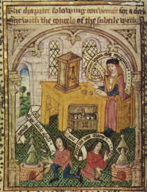
Hormis les poésies ou rimes, publiées à peu près complètes par M. G. Rosselló, et dont ils font peut-être plus de cas qu'il ne faudrait, les auteurs de l'Histoire littéraire n'ont pas eu connaissance, semble-t-il, des ouvrages écrits en catalan; de sorte qu'ils n'ont pu qu'entrevoir l'ombre de Luil, qu'ils ont dû s'abstenir de juger comme écrivain, sans
pouvoir se retrancher absolument derrière l'ignorance ou la connaissance imparfaite de la langue, comme le fin bonhomme Plutarque qui prétendait savoir trop peu de latin pour se prononcer sur l'éloquence de Cicéron, qu'il évite ainsi de comparer à Démosthène comme orateur. Dans maint passage de la longue notice biographique et bibliographique, où l'on voudrait plus d'unité, on sent la main peu légère de ces ambitieux romanistes qui se taillent des provinces dans la littérature espagnole, qu'ils administrent à titre d'hispanistes et de catalanistes. Il n'y aurait qu'à louer ce concours de lumières, si de cette énorme monographie d'environ 400 pages in-4° il était possible d'extraire seulement quelques idées originales, nettes et justes, comme celles qui
recommandent la mince et substantielle brochure d'HeIfferich, sur R. Luml et les commencements de la littérature catalane (Raymund Lull und die Anfänge der catalanischen Literatur, Berlin, 1857, in-8°). Jamais l'érudition n'est aussi précieuse que lorsqu'elle sert la pensée comme un instrument de précision. Ces recherches rétrospectives ne
signifient rien, si l'on ne peut les comparer à des projections de lumière électrique, éclairant à plein le passé, montrant les chos.es et les hommes d'autrefois dans leur milieu vivant. M. G. Rosselló ne peut que se féliciter de sa réserve, puisqu'il aura
toutes facilités pour ressusciter le vrai R. Lull en chair et en os, après avoir exhumé tous ses écrits authentiques, et appris à le connaître à force de les lire dans le texte original. L'érudition et la critique attendent beaucoup de lui, et leur attente ne sera pas vaine, s'il se conforme aux promesses de son programme. S'il se rencontrait en Espagne un homme de bonne volonté et de suffisante compétence pour entreprendre un travail analogue sur le médecin catalan Arnaud de Villeneuve, lequel occupe aussi une place
considérable dans l'Histoire littéraire de la France (tome XXVIII), l'Espagne n'en serait plus à considérer cette grande figure d'après la notice insuffisante de Hernandez Morejon, l'historien de la médecine espagnole, ou d'après le portrait peu ressemblant qu'en a tracé la plume infidèle du fanatique auteur de l'histoire indigeste des hétérodoxes
espagnols, ennemi déclaré de l'hérésie et de la libre pensée. Ce n'est point aux exorcistes, armés du goupillon, qu'il appartient d'évoquer les morts illustres. Le professeur de chimie de la Faculté des Sciences de Barcelone, M. de Luanco, est peut-être de tous les savants contemporains le plus propre et le mieux préparé à faire revivre, à réhabiliter celui qui passe encore de nos jours pour avoir enseigné l'art hermétique et le secret de la pierre philosophale à Ramon Lull. Ce point obscur de la vie des deux auteurs catalans devrait être élucidé par le critique sévère qui a mis à néant l'absurde légende qui faisait de Ramon Lull un alchimiste, mandé en Angleterre pour fabriquer, secundum artem, quelques millions de nobles à la rose. M, de Luanco, avec sa dialectique serrée et des documents indiscutables, a fait justice de cette fable ridicule, en prouvant, comme on dit, par a + b, que non seulement R. Lull ne fut jamais en Angleterre, mais que le roi de ce pays qui l'avait appelé pour remplir sa caisse vide n'a jamais existé; que le prétendu testament [cf. l'Elucidation du Testament] du prétendu alchimiste, œuvre manifeste d'un faussaire, est postérieur de dix-sept ans à sa mort, et finalement, que le docteur illuminé, ainsi qu'il appert de ses œuvres authentiques, professa toujours le plus profond dédain, le plus profond mépris pour l'alchimie et l'astrologie et pour les adeptes de ces fausses sciences. Cette démolition magistrale de la légende lullienne est un service essentiel rendu à la vérité et à l'histoire de la philosophie. Puisse celui à qui on le doit entreprendre un travail analogue pour dégager de la pénombre la figure originale d'Arnaud de Villeneuve, plutôt entrevue que connue.
Les philosophes nombreux qui subissent encore l'impulsion de la scolastique ne semblent pas se douter des monceaux d'erreurs qui encombrent l'histoire de la philosophie, qu'il faudrait refaire, ou reviser tout au moins, suivant la méthode critique de Pierre Bayle, ce dénicheur de faussetés, qui a tant démoli d'erreurs, en mettant au service de son génie dialectique une érudition de choix. Comme les constitutions les plus parfaites, l'histoire est sujette à revision, et par conséquent la biographie.
Malgré les gros volumes dont il a fourni la matière, particulièrement au XVIIIe siècle; malgré les compilations estimables des PP. Custurer et Pasqual, Ramon Lull n'est point connu; et il mérite de l'être pour bien des raisons, dont la principale est que cet homme extraordinaire fut son propre maître, qu'il ne devait à personne son savoir encyclopédique, et qu'aucune école ne peut le revendiquer comme lui appartenant. Peu de philosophes sont dans ce cas. Hormis l'Ecriture, cet autodidacte ne savait rien de l'antiquité. S'il fréquenta les écoles à l'âge où l'on n'est plus écolier, ce fut pour y parler en maître, pour disputer avec les maîtres, pour faire place à sa doctrine à côté de l'enseignement de tradition, pour mériter l'approbation des doctes ou des docteurs brevetés; car il eut cette faiblesse, n'étant lui-même qu'un volontaire de la philosophie, ni clerc, ni membre d'aucune université, ne prêchant jamais, comme on dit, pour sa paroisse, ni pour son couvent; car il resta toute sa vie indépendant et libre, vivant à la lettre, dans une société divisée en compartiments, comme un échiquier, en véritable ermite.
On pourrait, à tous ces titres, l'appeler un homme nouveau et, dans tous les cas, un homme singulier, à peu près sans modèle et sans imitateur. En admettant que toute sa philosophie ne vaille pas une heure de peine, ainsi que l'a dit de Descartes quelqu'un qui n'aimait pas à être dupe; en supposant que lui-même se soit laissé prendre à une vaine science de mots; en accordant au besoin que sa logique si compliquée n'était qu'une sorte de sophistique, il resterait toujours le mystique, qui dans le dédale de la psychologie pure, où il s'est engagé maintes fois, a su se débrouiller, non pas comme un métaphysicien enivré d'abstractions et mettant son raisonnement au service d'une imagination sans retenue, mais comme un observateur exact de la nature humaine
qui, tout en visant très haut, ne perd jamais pied et se tient sur le terrain solide de la sensibilité; analysant les sentiments avec ces raisons du cœur, que la raison ne connaît pas, se préoccupant avant tout des tendances de la volonté, dont les origines sont peut-être moins obscures que celles de l'entendement, et dont la direction lui paraît en revanche bien plus difficile. Peu d'auteurs ont poussé aussi loin les recherches sur les rapports de la volonté et de l'intelligence. Evidemment il croyait possible une théorie du sentiment, bien des siècles avant ceux qui l'ont tentée. Cet illuminé y voyait très clair, parce que, au rebours du commun des philosophes, qui, à force de s'abstraire et de se renfermer en eux-mêmes pour regarder en dedans et écouter sans distraction la voix intérieure, arrivent à uns espèce d'égoïsme monstrueux dans l'ordre intellectuel, il observait simplement ce qui se passait en lui, hors de lui et autour de lui; de sorte que, avec ou sans préméditation, il faisait de la psychologie comparée en suivant la méthode empirique, bien préférable dans la pratique à la méthode expérimentale, laquelle est moins conforme à la nature, et à cause de cela moins sûre, quoi que prétendent les ambitieux qui recherchent la précision et l'exactitude, comme si les investigations de ce genre comportaient la méthode et l'esprit géométriques.Le mystique R. Lull pensait peut-être que la partie la plus solide et la plus durable de son œuvre immense (plus de 300 écrits divers) était celle où il a prodigué, entassé les figures, les définitions, les questions, les divisions et subdivisions, les formules techniques, et quantité de mots étranges qui forment une nomenclature barbare, empruntée soit à la scolastique arabe, soit au vocabulaire de l'école; car ce docteur
laïque et autodidacte, qui se forma loin des universités, ne sut pas se passer de la langue scolaire, et il forgea des termes qui n'étaient point indispensables. S'il nourrissait cet espoir, il se trompait; car ce qu'il y a de bon, de curieux, d'intéressant, de réellement neuf dans ses ouvrages, c'est précisément ce qui ne doit rien aux écoles de l'Orient et de l'Occident. Dès qu'il veut faire le savant, ce maître n'est qu'un écolier. Ni les souvenirs ni les réminiscences d'école ne lui portent bonheur. Il se mit trop tard aux études pour attraper cet air de science probable qui sert de parure et de masque à tant de gradués; le costume scolaire ne lui sied pas mieux que l'habit clérical. Il le sentait bien, car à chaque instant il se débarrasse de la défroque scolastique qui le gêne; et toujours l'homme reparaît sous l'auteur. Sous le froc de l'ermite, qu'il avait adopté lors de sa conversion, il a plus de prestance qu'un chanoine fourré d'hermine ou un docteur coiffé du bonnet carré (voy. la jolie miniature du manuscrit offert au roi Philippe le Bel, en janvier 1310, n° 3323 du fonds latin de la Bibliothèque nationale). Par sa nature comme par sa race, R. Lull était d'un caractère foncièrement indépendant; il ne combattit pas dans le rang, mais comme volontaire, avec une ardeur et une ténacité qui lui tenaient lieu de discipline. Comme il écrivait sans apprêt dans sa langue maternelle, le vulgaire le lisait, le comprenait, savait par cœur plus d'une de ses naïves complaintes et de ses opuscules élémentaires sous la forme d'aphorismes, si propres à la divulgation de toute doctrine. Cet homme étrange qui passe généralement pour un esprit chimérique, détraqué et abstrus, fut un poète et un écrivain populaire. Si la « Philosophie de l'amour »
et l'admirable petit livre de « l'Ami et l'Aimé », incomparable manuel de la vie spirituelle, n'avaient pas été dans toutes les mains, il y a grande apparence que l'inquisiteur d'Aragon, Nicolas Eymerioh, son persécuteur posthume, qui voulait à toute force le faire déclarer hérétique, ne se fût pas acharné après sa mémoire, au point de fausser ou
de supposer des pièces émanées de la curie romaine, à l'appui de son implacable rancune. Il prétendait avoir relevé cinq cents propositions hétérodoxes dans les écrits de ce martyr que l'Église a béatifié, sans oser le canoniser. Les dominicains, en haine des franciscains, à l'ordre desquels était affilié R. Lull, empêchèrent ce saint homme d'avoir son brevet supérieur de sainteté : il n'était pas thomiste. De plus, les frères
prêcheurs formaient une aristocratie; et le pauvre R. Lull, quoique gentilhomme, de naissance, à force de simplesse et de bonté, pouvait le disputer en popularité aux plus renommés prédicateurs. On aurait tort de comparer et surtout d'assimiler ce docteur laïque, autodidacte, indépendant, apôtre volontaire des infidèles et réformateur
hardi des mœurs et de la discipline ecclésiastiques, à l'un de ces docteurs angéliques, infaillibles, irréfragables, dont les noms consacrés par l'Église ou par l'Université, entourés d'un auréole de sainteté ou d'une haute réputation de savoir, s'imposaient à la foule ignorante, qui les répétait et les honorait de confiance. R. Lull pariait à tous par
sa vie et par ses écrits. Une preuve éclatante de sa popularité, c'est que lorsqu'il s'embarqua pour sa dernière mission en Afrique, où il devait mourir lapidé, toutes les autorités civiles et ecclésiastiques, toute la population de Palma, l'accompagnèrent au port, comme s'il eût été un souverain, tant était grande sa réputation de science et de
sainteté. Cet ermite qui, à l'âge de l'ambition, avait renoncé à son rang élevé (il était sénéchal du roi de Majorque), à sa fortune, au brillant avenir que lui assurait sa naissance, recevait le prix de son abnégation et de son dévouement en estime et en vénération. Il n'est point de renommée aussi bien établie dans les pays de langue catalane. R. Lull, quoi qu'en dise le biographe de l'Histoire littéraire (« II resta le saint d'une île, comme il fut le docteur d'une coterie », t. XXIX, p. 64), fut aussi populaire que François d'Assise, Antoine de Padoue, et plus tard Vincent Ferrier, parce qu'il eut l'esprit d'égalité chrétienne qui lui fit oublier sa race de gentilhomme au point de le rendre très sévère pour l'ordre des chevaliers; parce qu'il fut pacifique; parce que son cœur lui
tint lieu de génie, ou plutôt parce qu'il eut le génie du cœur, celui qui fait les héros, les saints, et les écrivains naturels, d'une autre espèce que les auteurs. Un homme qui ne fut rien, qui ne voulut être rien, qui se fit pauvre et petit pour servir sans peur la vérité, qui ne se démentit jamais, qui pensa toujours tout haut, et devant les docteurs, et devant les rois, et devant les princes de l'Église, sans flatter personne, sans envie ni crainte de plaire ou de déplaire, c'est là un phénomène rare, même au moyen âge, ou la foi dominait la politique. Puisque cet homme d'une activité prodigieuse, d'un zèle ardent, d'une charité surhumaine, a déposé son âme dans ses multiples écrits, rien n'est plus légitime et opportun que la curiosité de le connaître tel qu'il fut, tel qu'il s'est peint et révélé dans ses ouvrages. Le seul moyen de l'arracher définitivement à la légende, c'est de lui donner, ou mieux de lui rendre la parole, de l'écouler avec recueillement, en se reportant d'intention dans le milieu social ou. il passa la moitié de sa vie. Il mourut octogénaire; et il frisait la quarantaine quand il s'arracha à la solitude studieuse pour entrer dans la carrière militante, armé de toutes pièces, plein de foi et saturé de science. Il ne reste rien de la période antérieure à sa conversion. Il est probable que le trop galant sénéchal n'avait fait que des vers érotiques, à la manière des troubadours. Beaucoup d'allusions à ce temps de folies prouvent qu'il ne se rappelait pas sans regrets les écarts de sa vie mondaine. En revanche, quantité d'observations excellentes, justes et profondes, attestent aussi une expérience peu commune des gens et des choses du monde. C'est de la seconde moitié de sa vie que sont les écrits qui portent son nom. On peut les classer en trois groupes : authentiques, suspects,
manifestement apocryphes. A ce dernier groupe appartiennent tous les ouvrages et opuscules d'alchimie et d'astrologie; au second, beaucoup d'écrits en latin, où la pensée et les sentiments du maître se trouvent plus ou moins altérés par des disciples ou des sectaires qui ont pris sa place [cf. supra, ouvrages supposés]. D'après ce que l'on sait des éludes de R. Lull par lui-même, il n'apprit le latin qu'assez tard et d'une manière imparfaite, et il ne posséda jamais cette langue morte au point de pouvoir la parler et l'écrire couramment. Il y a grande apparence qu'il fut aidé dans la rédaction d'un grand nombre de ses œuvres latines par des secrétaires ou reviseurs. Dans ce latin d'école, pour ne pas dire de cuisine, on sent le catalan. L'opinion d'Hefferich (p. 86 de sa monographie) sur ce point capital n'a point de fondement. Si R. Lull avait appris le latin dans son enfance, il n'aurait pas eu la peine de se mettre au rudiment comme un
écolier, après la trentaine. Quant aux versions en arabe, c'est lui-même qui s'en chargeait ; mais il n'est pas prouvé qu'il ait composé en arabe des ouvrages originaux, malgré quelques passages qui pourraient le faire croire. Il pensait, comme on dit, en catalan; et les livres de controverse ou de propagande qu'il destinait aux musulmans n'étaient point de premier jet; en autres termes, il n'y mettait point toute sa pensée,
sans réticence, ainsi que le prouve avec évidence un passage très curieux de l'introduction à l'Art amativa, où on lit en toutes lettres que, dans l'édition qu'il prépare pour les lecteurs arabes, ne figurera pas tout ce qui concerne les mystères de la Trinité et de l'Incarnation, dont les mahométans ne voulaient pas entendre parler.« Nos empero per tal que ells no la menyspresen explicite de trinitat ni de incaernacio on aquesta art no parlam per tal que ells no la lexen d'apendre ni aquest paragrafi en la translacio que della farem en arabich no proposant metre » (f° 2 V° du mss. 234 du fonds esp. de la Bibl. nat.).
Il ne se peut rien de plus explicite. Ce trait de diplomatie nous montre R. Lull sous un jour nouveau, se faisant tout à tous, suivant le précepte et l'exemple de l'apôtre; car son but était de convertir à la foi chrétienne Sarrasins, schismaliques, juifs et païens, et son désir le plus vif, de fournir aux chrétiens des armes pour battre leurs adversaires sur le terrain de la controverse. De là le souhait de voir ses livres traduits dans la langue des mécréants, et l'invitation aux docteurs d'abandonner le latin, qui ne pouvait suffire à tout, pour les idiomes vulgaires; car enfin à quoi bon le latin hors de l'école ? Ce n'est point en latin qu'il est possible d'édifier les gens qui ne l'entendent point, outre que le vocabulaire latin ne peut fournir tous les termes nécessaires à l'exposition du dogme et à la controvese. Le passage vaut la peine d'être inlégralemeni reproduit :
« La entencio perque nos esta amancia posam en vulgar es perço que los homens qui no saben lati pusquan auer art e doctrina com sapian ligar lur volentat a amar ab bona amor, e encara com sapien auer sciencia a, conexer veritat; e encara perço la posam en vulgar quels homens qui saben lati aien doctrina e manera com de les peraules latines sapien deuallar a parlar bellement en vulgar vsan dels vocables desta art, car molts homens son qui de la sciencia en lati no saben transportar en vulgar per defalliment de vocables los quais per esta art auer pora. » (îd., f 2 r°).
Ce langage net et précis est d'un réformateur qui s'adresse à tout le monde. Quant au péché d'omission contre la foi orthodoxe, qui consiste à supprimer les grosses difficultés du dogme, de peur d'effrayer les infidèles, il n'en faudrait pas conclure à une ressemblance quelconque avec le fondateur de la Société de Jésus. Le docteur illuminé n'avait rien absolument de la nature du renard ; mais il connaissait les hommes, et ses ouvrages abondent en fines remarques sur les passions et les travers de l'espèce humaine. Peut-être ne possédait-il pas toute la prudence du serpent, mais qui pourrait lui refuser l'innocence de la colombe ? Ce qui recommande son mysticisme, c'est la morale qu^on y trouve, déduite non pas du dogme, mais de cette .connaissance de l'homme que ne donne point la métaphysique du sanctuaire ou de l'école. En somme, toute philosophie ne vaut que par la morale, et la morale lullienne paraît irréprochable. Cela étant, il est permis d'admirer R. Lull par ses beaux côtés, car il a réellement de belles parties, et il est utile de le faire connaître, en le montrant tel qu'il était, et non pas travesti par la légende, défiguré par le fanatisme des sectaires, dénaturé par une critique injuste. Telle est l'ambition légitime et louable du poète érudit M. Geroni Rosselló, qui vient de commencer, peut-être un peu tard, l'exécution d'un projet de jeunesse, en donnant à Palma, sous les auspices d'un prince de la maison d'Autriche, ami des lettres et fervent admirateur de R. Lull, dont il a restauré le culte, une édition complète des œuvres catalanes, qui ne formera pas moins de vingt volumes, et dont ce qui a paru jusqu'ici promet une publication sérieuse, soignée et probablement
définitive. Familier depuis plus de quarante ans avec les écrits de Lull, possesseur de nombreux manuscrits, sachant à fond la langue catalane du moyen âge, qu'il imite au besoin dans ses poésies originales, M.Rosselló a tous les titres pour assumer la responsabilité d'une entreprise ardue, que lui seul peut-être pouvait tenter sans trop de présomption, avec le zèle et la confiance d'un admirateur sans fanatisme, avec l'espérance d'élever à l'homme le plus illustre de Majorque, dans sa propre patrie, le monument qui doit honorer le plus celte grande mémoire. Avec la piété d'un compatriote, cet éditeur scrupuleux donne les variantes de tous les manuscrits qui sont à sa disposition, et il pousse l'amour de l'exactitude jusqu'à collationner les textes originaux, pour la plupart inédits, avec la paraphrase latine. Bien que des éloges soient
dus, dès à présent, à son courage, à son zèle, à sa bonne volonté, la critique doit suspendre son jugement jusqu'au jour où le diligent éditeur, tout en poursuivant sa lourde tâche, aura publié le résultat de ses investigations bibliographiques, son dessein étant de joindre à l'édition de toutes les œuvres catalanes de R. Lull une bibliographie complète et une biographie nouvelle, l'une et l'autre d'après les sources, avec des
indications précises et tous les documents utiles, suivant la méthode sévère qui est de tradition dans cette docte et laborieuse académie de l'histoire dont M. G. Rosselló est un membre distingué.Voici la liste des principaux ouvrages indiqués dans le prospectus .
Le livre du gentil et des trois sages (en cours de publication) ; — le livre de contemplation; — le livre des anges; — l'art de peser et de résoudre des questions; — le livre de la chevalerie; — la doctrine de l'enfance; — le roman de Blanquerna; —le livre de l'ami et de l'aimé; — l'art d'élection et l'art de contemplation ; — le livre de la première et de la seconde intention; — l'apostrophe; —l'art d'aimer le vrai et le bien; — le livre de notre dame Sainte-Marie; — la nouvelle logique; — la table générale ; — fleurs d'amour; — l'arbre de science ; — le livre des proverbes; — la philosophie d'amour; — le livre des oraisons (dédié à la reine Blanche d'Aragon); — le livre d'astronomie; — le livre d'astrologie; — le livre de Dieu ; — le livre de l'homme; — le livre de ce que l'homme doit croire de Dieu; — le livre des mille proverbes ; — le livre
de confession ; — le livre des vertus et des péchés, ou grand art de prêcher; — l'art abrégé; — complainte de la philosophie; — la consolation de l'ermite.Et la liste n'est pas complète, s'il faut en croire la formule, y otros, grosse de promesses. La Revue philosophique tiendra ses lecteurs au courant, au fur et à mesure que les volumes se succéderont. Quelques analyses sommaires, des résumés, des citations et des extraits permettront peut-être aux curieux de vieilles nouveautés de se faire une idée raisonnable des écrits divers de ce docteur illuminé, vilipendé par l'outrecuidant F. Bacon, admiré comme un précurseur par G. Bruno, loué par Leibniz avec cet esprit de curiosité et d'équité qui lui faisait découvrir des perles dans les élables de la philosophie, comme Virgile dans le fumier d'Ennius. Quand la critique est patiente et bienveillante, les ouvrages qu'elle passe au creuset y laissent toujours quelques grains d'or ; car il n'est si mauvais livre qui ne vaille par quelque endroit. Si R. Lull est, comme il paraît, un écrivain de race et l'une des gloires de la littérature catalane, il faudra bien lui reconnaître quelque mérite et casser le jugement défavorable de la présomption ou du préjugé.
J.-M. GUARDIA.
Commentaire sur la Clavicule et le mercure : dans ce texte sont entremêlés des éléments qui décrivent la préparation de l'un des principaux composés du Mercure philosophique : le tartre vitriolé ; d'autres éléments apparaissent qui n'ont en apparence aucun rapport avec l'Oeuvre, en particulier le mercure vulgaire lorsque Lulle aborde la préparation de l'amalgame. Toutefois, Lulle dit à plusieurs reprises que le mercure vulgaire n'est d'aucun usage pour l'oeuvre ; on peut donc se poser la question de savoir si, lorsqu'il mentionne le vif-argent, il ne parle pas plutôt de « l'argent-vif » des philosophes, c'est-à-dire de l'hydrargyre tel que le conçoit Fulcanelli. Dans certains passages, la préparation du sublimé corrosif est clairement exposée. Autre chose, la référence à la Lune. Les historiens de l'alchimie et les alchimistes eux-mêmes ont envisagé la Lune, soit en tant que Lune blanche ou de Lune cornée ; les anciens chimistes donnaient le nom de Lune cornée au sublimé corrosif mais on ne s'est pas avisé qu'une pierre, nommée sélénite [pierre de lune] n'est autre que du sulfate de chaux. Le sulfate de chaux possède avec le sulfate de potasse et le sulfate de magnésie la propriété de ne pas se décomposer à la chaleur blanche. Il est possible, ainsi, de s'en servir comme fondant, c'est-à-dire comme Mercure philosophique.
Dès lors, il est possible de réinterpréter la Clavicule en ne voyant pas dans l'argent le métal qui porte ce nom mais un minéral. Il y a plus : le pseudo-Lulle nous prévient au début de la Clavicule que le mercure vulgaire ne sert à rien dans l'oeuvre. Nous en sommes bien d'accord. Néanmoins, l'auteur continue d'utiliser l'expression de « mercure vulgaire » dans la suite du traité. Mais il différencie le mercure vulgaire du Mercure physique ; l'expression est d'ailleurs curieuse puisque, plusieurs siècles après, Fulcanelli écrira que l'alchimie se démarque de la chimie, en une époque de l'oeuvre où domine un « moyen ou artifice » qui resortit davantage de la physique [c'est-à-dire de la Nature, jusoV. L'impétrant ne doit jamais oublier que l'Artiste guide son vaisseau d'après ce que fait la Nature ; cf. Mercure de nature] que de la chimie. Quoi qu'il en soit ce mercure vulgaire est en fait le Mercure commun ou premier Mercure des philosophes. Ce Mercure qui possède les attributs de l'air et de l'eau doit être conjoint au Mercure physique ou corporel qui possède les attributs de la terre et du feu. Dans un autre passage, il est fait état du corps parfait où l'on devine le Rebis. Dans plusieurs passages, la chaux de Lune est évoquée et il semble difficile d'y voir de l'argent. Deux hypothèses peuvent être évoquées : soit de la pierre de Jésus ou sélénite ; soit une sorte d'alun de Chypre mêlé à du vitriol bleu [ce n'est là qu'une conjecture]. Notez encore que tout au long du traité, l'alkali fixe est nommé de façon indirecte : au chapitre II, XIV et XV en particulier. Le traité mêle ainsi des exposés concernant le 2ème oeuvre [préparation du dissolvant] et le 3ème oeuvre, abordé seulement par la dissolution totale ou grande éclipse de soleil et de lune ; les couleurs de l'oeuvre sont aussi évoquées sous le couvert d'opérations qui semblent tout à fait chimériques. Il y aurait encore bien des choses à dire sur les matras dont parle tout au long du traité le pseudo-Lulle. Le mot matras [début XVIe pour matheras « vase à long cou » ; semble dériver soit de l'arabe matara, « outre, vase », soit de l'emploi, par métaphore, de l'ancien français materas, fin XIIIe - variante mattras, XVe s. -, « long dard lancé par une arbalète », du latin populaire mattara, de matara, « sorte de javeline », mot gaulois] signifie avant tout outre ou vase. De là à y voir le vase de nature, le vaisseau de verre, il n'y a qu'un pas. On peut donc se poser la question de savoir si tout ce que dit l'auteur ne doit pas plutôt s'entendre par la voie sèche que par la voie humide ? Mais la Clavicule se révèle posséder des richesses insoupçonnées si l'on veut bien faire quelque effort pour séparer le grain d'or de l'ivraie. Ainsi, l'auteur semble un virtuose de la cabale quand il parle du Mercure : car ce n'est pas moins de quatre Mercures qu'il nomme : le Physique ou Corporel ; le Vulgaire. Puis il cite deux autres Mercures où l'on peut voir qu'il joue, dans la compréhension, sur la forme qu'adopte le Soufre à un moment de l'oeuvre ; chose bien vue et signalée par Fulcanelli. On arrive ainsi à supputer ce que peut être la chaux de Lune et surtout la chaux blanche dans laquelle il semble bien qu'on puisse voir de l'argile pure comme on disait au XIXe siècle. En bref, la Clavicule donne des indications :
- sur la préparation du Soufre blanc ;
- sur les épithètes nombreuses du Mercure, où quatre genres peuvent être distingués ;
- sur les opérations, allégoriques, touchant à la conjonction des Soufres ;
- sur la préparation de la pierre des philoosphes ou REBIS.Pour les lecteurs qui penseraient que l'auteur a en vue le le vif-argent vulgaire, voici quelques indications :
. Le métal est connu depuis la plus haute antiquité. Les Phéniciens en faisaient un commerce important, et, 700 ans av. J.-C., les Grecs l'importaient des mines d'Almaden, déjà réputées parmi les plus productives ; Pline rapporte que, de son temps, on en extrayait plus de 100 000 livres par an. Les romains distinguaient deux espèces de mercure : l'argent-vif [argentum vivum] ou mercure natif, et l'eau-argent [hydrargyre] ou mercure préparé artificiellement [on voit pourquoi Fulcanelli parle de l'hydrargyre philosophique : c'est un argent vif ou fondant artificiel qui permet la dissolution des oxydes métalliques]. Le vif-argent était recueilli dans les mines d'Espagne « sous forme d'un liquide éternel, poison de toutes choses [le mercure est extrêmement toxique] » [Pline]. On retirait le mercure du cinabre [cinnabaris], que l'on confondait souvent, à cause de sa couleur rouge, avec le minium ou le millos des Grecs [notez que plusieurs alchimistes modernes appellent le cinabre, le dragon rouge], erreur qu'avait déjà signalé Dioscoride. Pour extraire le mercure :
« on place, dit Dioscoride, dans un creuset de terre une assiette de fer contenant du cinabre, puis on y adapte un chapiteau ou alambic, en le lutant tout autour ; enfin, on allume des charbons au-dessus de cet appareil. Alors le mercure se sublime et vient s'attacher au chapiteau, où, par le refroidissement, il se condense et prend la forme qui le caractérise ».
Pline indique aussi le même procédé de préparation, après un premier traitement par le vinaigre et un broyage dans un mortier, pour se débarasser de la gangue calcaire qui accompagne souvent le minerai de mercure. On purifiait le mercure en l'amalgamant avec de l'or, et en le passant à travers les pores d'une peau ou d'un linge fin. Ce procédé était en même temps employé pour l'affinage de l'or :
«Toutes les matières surnagent le vif-argent, dit Pline, excepté l'or, qui est la seule substance qu'il attire à soi ; aussi est-il excellent pour isoler l'or ; on le secoue vivement dans des vases de terre avec ce métal, et il en repousse toutes les impuretés qui y sont mêlées. Une fois qu'il a rejeté les choses étrangères, il ne reste plus qu'à le séparer lui-même de l'or ; pour cela on le met dans des nouets de peau assouplie, à travers lesquels il transsude, laissant l'or dans toute sa pureté...»
¯
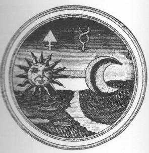
(Elementa Chemiae de J.C. Barchusen, Leyde, 1718)
Traité connu aussi sous le nom de Clef universelle, dans lequel on trouvera clairement indiqué tout ce qui est nécessaire pour parfaire le Grand Œuvre.
Nous avons appelé cet ouvrage Clavicule, parce que sans lui, il est impossible de comprendre nos autres livres, dont l'ensemble embrasse l'Art tout entier, car nos paroles sont obscures pour les ignorants.
J'ai fait beaucoup de traités, très étendus, mais divisés et obscurs, comme on peut le voir par le Testament, où je parle des principes de la nature et de tout ce qui a trait à l'art, mais le texte a été soumis au marteau de la Philosophie. De même pour mon livre du Mercure des philosophes, au second chapitre : de la fécondité des minières physiques, de même pour mon livre de la Quintessence de l'or et de l'argent, de même enfin pour tous mes autres ouvrages où l'art est traité d'une manière complète, sauf que j'ai toujours caché le secret principal. Or, sans ce secret nul ne peut entrer dans les mines des philosophes et faire quelque chose d'utile, c'est pourquoi avec l'aide et la permission du Très Haut auquel il a plu de me révéler le Grand Œuvre, je traiterai ici de l'Art sans aucune fiction. Mais gardez-vous de révéler ce secret aux méchants ; ne le communiquez qu'à vos amis intimes, quoique vous ne dussiez le révéler à personne, parce que c'est un don de Dieu [assonance en grec entre Dieu èqeoV et le soufre èqeioV ; Lulle insiste là sur un sulfure ou un sulfate] qui en fait présent à qui lui semble bon. Celui qui le possédera, aura un trésor éternel.
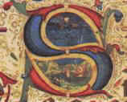
Apprenez donc à purifier le parfait par l'imparfait. Le Soleil [principe Soufre] est le père de tous les métaux et la Lune est leur mère [il s'agit ici de la Lune cornée, c'est-à-dire du dissolvant universel ou Mercure philosophique], quoique la Lune reçoive sa lumière du Soleil. De ces deux planètes dépend le magistère tout entier [allusion au Soufre rouge pour le Soleil, qui constitue l'Âme ou teinture qui orientera la Pierre et au Soufre blanc ou corps, résine de l'or, appelée aussi semence métallique è le Soufre blanc est une terre alumineuse].
D'après Avicenne, les métaux ne peuvent être transmués qu'après avoir été ramenés à leur matière première, ce qui est vrai. Il te faudra donc réduire d'abord les métaux en Mercure [il faut entendre ici en chaux métallique, c'est-à-dire en oxyde et dissous dans le fondant qui est le Mercure] ; mais je n'entends pas ici le mercure vulgaire, volatil, je parle du Mercure fixe; car le mercure vulgaire est volatil, plein d'une froideur flegmatique, il est indispensable qu'il soit réduit par le Mercure fixe, plus chaud, plus sec, doué de qualités contraires à celles du mercure vulgaire [il faut donc ici bien différencier le vif-argent vulgaire de l'argent-vif hermétique qui est constitué, pour partie, de chaux métalliques ou métaux brûlés è ces chaux constituent le véritable Mercure, tenu en suspension et dissous dans l'amalgame philosophique qui est le Compost].
C'est pourquoi je vous conseille, ô mes amis, de n'opérer sur le Soleil et la Lune qu'après les avoir ramenés à leur matière première qui est le soufre et le Mercure des philosophes [c'est l'humide radical métallique du cosmopolite et de Fulcanelli].
O mes enfants, apprenez à vous servir de cette matière vénérable, car je vous en avertis sous la foi du serment, si vous ne tirez le Mercure de ces deux métaux, vous travaillerez comme des aveugles, dans l'obscurité et dans le doute. C'est pourquoi, ô mes fils, je vous conjure de marcher vers la lumière, les yeux ouverts et de ne pas tomber en aveugles dans le gouffre de perdition.
Nous disons : le mercure vulgaire ne peut pas être le Mercure des Philosophes, par quelqu'artifice qu'on l'ait préparé ; car le mercure vulgaire ne peut tenir au feu qu'à l'aide d'un Mercure étranger corporel qui soit chaud, sec, et plus digéré que lui
[Lulle anticipe de façon géniale sur ce que les chimistes découvriront au sujet du radical ammonium, formé de l'amalgame entre le mercure et le sel ammoniac : plus exactement, pour obtenir cet amalgame, on introduit dans une coupelle de sel ammoniac, légèrement humide, un peu de mercure. On voit, sous certaines conditions, le mercure augmenter de volume et prendre une consistance butireuse, semblable à celles qui est propre aux amalgames des métaux alcalins, tels que le potassium : il s'agit d'un corps qui est doué de tous les caractères d'un composé métallique. Pour en revenir au mercure vulgaire, il y a là un jeu de pistes. D'un côté, Lulle nous averti que le mercure ne vaut rien pour l'oeuvre ; mais la suite du texte va montrer qu'en fait, Lulle entend parler du mercure vulgaire comme du premier mercure des philosophes, analogue au vieux dragon ou au Mercurius senex de Jung].
C'est pourquoi je dis que notre Mercure physique est d'une nature plus chaude et plus fixée que le mercure vulgaire [on rappelle que le Mercure vulgaire n'est autre que le mercure commun, c'est-à-dire le premier Mercure]. Notre Mercure corporel [ le Mercure corporel est composé des Soufres non encore dissous ; il s'agit donc de substances pulvérulentes qui se convertissent en Mercure coulant sous l'influence de Vulcain ardent. Le secret est de s'imaginer, comme le signale Fulcanelli, que les alchimistes ont nommé la même substance MERCURE ou SOUFRE selon la forme ou l'état de la matière à une époque considérée de l'oeuvre] se convertit en mercure coulant, ne mouillant pas les doigts ; quand il est joint au mercure vulgaire, [on a donc l'équation : MERCURE VULGAIRE + SOUFRES = MERCURE DOUBLE] ils s'unissent et se joignent si bien à l'aide d'un lien d'amour, qu'il est impossible de les séparer l'un de l'autre, de même de l'eau mêlée à de l'eau. Telle est la loi de la nature. Notre Mercure [sous-entendu corporel] pénètre le mercure vulgaire et se mêle à lui en desséchant son humidité flegmatique, lui enlevant sa froideur, ce qui le rend noir comme du charbon et le fait enfin tomber en poussière [Lulle parle ici du Mercure au moment de la dissolution. ].
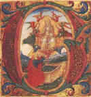
Remarque bien que le mercure vulgaire ne peut être employé à la place de notre Mercure physique, [ils doivent être employés de façon conjointe] lequel possède la chaleur naturelle au degré voulu ; c'est même pour cela que notre Mercure communique sa propre nature au mercure vulgaire [le Mercure physique ou corporel transmet sa nature, c'est-à-dire les chaux au Mercure commun, le tout formant le Mercure philosophique].
Bien plus, notre Mercure, après sa transmutation [dans le sens d'un changement de forme], change les métaux en métal pur, c'est-à-dire en Soleil et en Lune, ainsi que nous l'avons démontré dans la seconde partie de notre Pratique. Mais il fait quelque chose de plus remarquable encore, il change le mercure vulgaire en Médecine pouvant transmuer les métaux imparfaits en parfaits. Il change le mercure vulgaire en vrai Soleil et en vraie Lune, meilleurs que ceux qui sortent de la mine. Notez encore que notre Mercure physique peut transmuer cent marcs et plus, à l'infini, tout ce que l'on aura, de mercure ordinaire, à moins que celui-ci ne vienne à manquer.
Je veux aussi que vous sachiez autre chose, le Mercure ne se mélange pas facilement et jamais parfaitement à d'autres corps, si ceux-ci n'ont été auparavant ramenés à son espèce naturelle [c'est-à-dire à l'état de métaux brûlés - on emploie l'expression d'humide radical métallique - que Stahl appelait encore des chaux métalliques]. C'est pourquoi lorsque tu voudras unir le Mercure au Soleil ou à la Lune du vulgaire, il te faudra d'abord ramener ces métaux à leur espèce naturelle qui est le mercure ordinaire [il faut fondre les métaux ; mais cela ne suffit pas qu'il il faut les fondre ou les dissoudre sous forme de sels], cela à l'aide du lien d'amour naturel [le lien d'amour n'est autre que le moyen ou artifice par lequel on joint les deux extrémités du vaisseau de nature : c'est un haut secret de l'oeuvre, dont les Adeptes n'ont parlé qu'avec beaucoup de retenue è voyez ce qu'en disent Fulcanelli et E. Canseliet lorsqu'ils évoquent la figure du potier Piccolpassi] ; alors le mâle s'unit à la femelle [préparation du REBIS]. Aussi notre Mercure est-il actif, chaud et sec, tandis que le mercure vulgaire est froid, humide, passif comme la femelle qui est retenue à la maison dans une chaleur tempérée jusqu'à la parturition [il semble que Lulle parle ici des Soufres et non du Mercure : le Mercure actif, chaud et sec, désigne la SOUFRE rouge ou teinture ; tandis que le Mercure vulgaire semble être le SEL ou corps de la Pierre ; il faut comprendre qu'il s'agit là des Soufres liquides ou rendus fluides par le feu]. Alors ces deux mercures deviennent noirs comme charbon; c'est là le secret de la vraie dissolution [les deux matières, l'agent et le patient, sont mêlées et dissoutes]. Puis ils se joignent entre eux de telle sorte qu'il devient impossible de les séparer jamais. Ils se présentent alors sous forme d'une poudre très blanche [phase de déalbation. Tout semble dit ici pour dérouter l'étudiant vers la voie humide ; nous posons comme hypothèse que les alchimistes envisagent la voie sèche. La voie humide conduit, en effet, à une impasse hormis la question particulière des dissolutions auriques ], et ils engendrent des enfants mâles et femelles par le vrai lien d'amour [ils engenderent UN enfant, qui est hermaphrodite : l'homme double igné de Basile Valentin]. Ces enfants se multiplieront à l'infini selon leur espèce ; car d'une once de cette poudre, poudre de projection, élixir blanc ou rouge, tu feras des Soleils en nombre infini et tu transmueras en Lune toute espèce de métal sorti d'une mine. [les sublimations réitérées comme les multplications exponentiennes restent un mystère total]
Prends une once de chaux de Lune coupellée
[la chaux entre dans la composition du Mercure ; c'est une base forte qui, le moment venu, saura déplacer l'alumine de la silice : nous avons vu plus haut qu'un des modes de cristallisation de l'alumine serait déterminé par la liaison entre la base unie à l'alumine et la silice. Mais la chaux dont parle ici Lulle est plus vraisemblablement un oxyde métallique. Il est rien moins que douteux qu'il s'agisse d'argent - nous aurions tendance à voir dans cette chaux de Lune de l'alun calciné ],
calcine-la selon la façon décrite à la fin de notre ouvrage sur le Magistère. Cette chaux sera ensuite réduite en poudre fine sur une plaque de porphyre. Tu imbiberas cette poudre, deux, trois, quatre fois par jour avec de la bonne huile de tartre
[Lulle décrit presque, ici, la préparation du tartre vitriolé ; il s'agit d'un procédé « artisanal » de purification du tartre, c'est-à-dire du tartrate acide de potassium : Lefèvre, dans son cours de Chymie, parle de la purification du tartre par la chaux : la chaux sert à dissoudre plus facilement le tartre et permet de précipiter au fond et « d'attirer à soi » toute la lie et toutes les limosités visqueuses qui font l'impureté du tartre et qui empêchent au cristaux d'être blancs et purs. La chaux, en quelque sorte, fixe ainsi le sel essentiel du tartre mais le tartre ne doit plus alors être utilisé en Médecine]
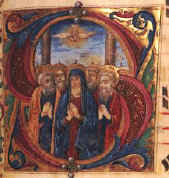
préparée de la manière décrite à la fin de cet ouvrage ; puis tu feras sécher au soleil [c'est ainsi que l'on prépare le tartre purifié]. Tu continueras ainsi jusqu'à ce que ladite chaux ait absorbé quatre ou cinq parties d'huile, la quantité de chaux étant prise pour unité ; tu pulvériseras la poudre sur le porphyre comme il a été dit, après l'avoir desséchée, car alors elle se réduit plus facilement en poudre. Lorsqu'elle aura été bien porphyrisée, on l'introduira dans un matras à long col. Vous y ajouterez de notre menstrue puant fait avec deux parties de vitriol rouge et une partie de salpêtre
[cette opération correspond à la préparation du Mercure philosophique tel qu'il est décrit dans la section sur le tartre vitriolé ; le vitriol rouge correspond à de l'esprit de vitriol, c'est-à-dire de l'acide sulfurique étendu d'eau. A noter que le tartre vitriolé peut être préparé directement à partir de salpêtre et d'esprit de vitriol] ;
vous aurez auparavant distillé ce menstrue par sept fois [nous rappellons que le chiffre 7 est inséparable d'Apollon ; il est donc clair qu'il est ici question du dissolvant] et vous l'aurez bien rectifié en le séparant de ses impuretés terreuses, si bien qu'à la fin ce menstrue soit complètement essentiel. [qu'il soit transformé en eau permanente, qu'il soit fluide comme de l'eau]
Alors on lutera parfaitement le matras, on le mettra au feu de cendres, avec quelques charbons, jusqu'à ce que l'on voie la matière bouillir et se dissoudre. [si le matras est luté, no ne comprend pas comment l'Artiste pourra voir sa matière ; il y a là une contradiction] Enfin l'on distillera sur les cendres jusqu'à ce que tout le menstrue ait passé et l'on attendra que la matière soit froide. Quand le vase sera complètement refroidi, on l'ouvrira, et la matière sera placée dans un autre vase bien propre muni de son chapiteau parfaitement luté. On placera le tout sur des cendres dans un fourneau. Le lut étant sec, on chauffera d'abord doucement jusqu'à ce que toute l'eau de la matière sur laquelle on opère ait passé dans le récipient [il s'agit du phlegme]. Puis on augmente le feu pour dessécher complètement la matière et exalter les esprits puants qui passeront dans le chapiteau et de là dans le récipient. Lorsque vous verrez l'opération arrivée à ce point, vous laisserez refroidir le vaisseau en diminuant peu à peu le feu. Le vase étant froid, vous en retirerez la matière que vous réduirez en poudre subtile sur le porphyre [cette poudre doit avoir un rapport avec l'alkali fixe car les matières de départ -nitre, tartre, esprit de vitriol- ne peuvent conduire qu'à un alkali]. Vous mettrez la poudre impalpable ainsi obtenue dans un vase de terre bien cuit et bien vitrifié. Puis vous verserez par dessus de l'eau ordinaire bouillante, en remuant avec un bâton propre, jusqu'à ce que le mélange soit épais comme de la moutarde. Remuez bien avec la baguette jusqu'à ce que vous voyiez apparaître quelques globules de mercure dans la matière [quelques Philosophes l'ont aussi marqué. Morien dit : il faut qu'on y remarque quelque acidité et qu'elle ait quelque odeur de sépulcre. Philalèthe dit qu'il faut qu'elle paroisse comme des yeux de poisson...et
qu'il paroisse qu'elle écume ; car c'est une marque que la matière se fermente et qu'elle bout. Cette fermentation...se fait par notre feu secret, qui est le seul agent qui puisse ouvrir, sublimer et putréfier ] ; il y en aura bientôt une assez grande quantité selon ce que vous aurez employé de corps parfait, c'est-à-dire de Lune [le corps parfait désigne, selon Basile Valentin, l'Esprit du Soleil fermenté avec son huile ; faut-il y voir le Soufre sublimé dans le Mercure ; ou bien un stade de la coction où l'union des Principes est réalisée ? Il s'agirait alors du CORPS du REBIS. Artephius dit qu'il blanchit le laiton et réduit le corps parfait en sa première matière, c'est-à-dire en Soufre et argent-vif]. Et jusqu'à ce que vous en ayez une grande quantité, versez de temps en temps de l'eau bouillante et remuez jusqu'à ce que toute la matière se réduise en un corps semblable au mercure vulgaire [considéré ici comme le patient, à l'instar du CORPS de la Pierre. Pourtant Lulle lui attribue les qualités de froid et d'humide - AIR et EAU - qui le distinguent comme l'eau permanente des Sages]. On enlèvera les impuretés terreuses avec de l'eau froide, on séchera sur un linge, on passera à travers une peau de chamois. Et alors vous verrez des choses admirables. [Lulle réalise la préparation d'une variété d'huile de tartre par défaillance, c'est-à-dire de carbonate de potasse hydraté]
Au nom du Seigneur. Amen.
Prenez trois gros de Lune pure en lamelles ténues [il ne s'agit pas de la même lune que dans le chapitre II où il était question de la Lune en son premier quartier, c'est-à-dire la lune cornée] ; faites-en un amalgame avec quatre gros de mercure vulgaire bien lavé [donc, de Mercure commun bien dépuré]. Quand l'amalgame sera fait vous le mettrez dans un petit matras ayant un col d'un pied et demi.
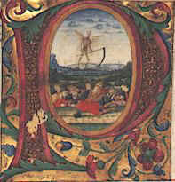
Prenez ensuite notre Mercure extrait ci-dessus du corps lunaire, [il s'agit donc ici, selon notre hypothèse - la Lune n'est pas de l'argent, mais une sorte de chalcitis fait d'une pyrite cuivreuse mêlée d'alun] et mettez-le sur l'amalgame fait avec le corps parfait [l'esprit du soleil fermenté avec son huile, qui désigne le Soufre rouge. Dans un autre passage de son Livre Secret, Artephius dit qu'il faut mettre le corps parfait en une certaine eau à disposer dans une maison de verre. Sur cette maison de verre, cf. Atalanta, IX - Pernety explique que le corps imparfait - assimilable au Mercure vulgaire (?) - est l'Arsenic des philosophes, c'est-à-dire le CORPS de la Pierre, ou encore le principe SEL de Paracelse. Dans son Miroir de l'alchimie, Bacon dit encore que le corps parfait est l'Or des Sages. Ripley, toujours de bon conseil, écrit sur le sujet :
« La quatrième digestion est la consommation de tous les mystères du monde : par elle la terre étant changée en un très excellent ferment , fait lever elle-même tous les autres corps changés en un corps parfait , parce qu'elle a passé en la nature céleste de la quintessence , de sorte que sa vertu inspirée par l' esprit de l'univers est la panacée et la médecine générale de toutes les maladies de toutes les créatures. Le fourneau secret des philosophes te découvrira ce miracle de la nature et de l'art»
la fermentation qu'évoque Ripley est abordée supra.] et le mercure vulgaire [qui correspond à l'eau permanente ou dissolvant] ; lutez le vase avec le meilleur lut possible [c'est-à-dire la meilleure terre] et faites sécher. Ceci fait, agitez fortement le matras pour bien mélanger l'amalgame et le mercure. Puis placez le vase où se trouve la matière dans un petit fourneau sur un feu de quelques charbons seulement ; la chaleur du feu ne doit pas être supérieure à celle du soleil lorsqu'il est dans le signe du lion. [cf. zodiaque alchimique sur le Lion ; dire que la chaleur doit être celle du Soleil dans le Lion équivaut à celle du 4ème degré de feu dont parle Fulcanelli dans son Mystère des Cathédrales : 1300°C. On devine que la voie humide est ici absolument impossible et que c'est par l'esprit que Lulle conseille d'utiliser un matras, mis pour maison de verre ou vase de nature] Une chaleur plus forte détruirait votre matière ; aussi continuez ce degré de feu jusqu'à ce que la matière devienne noire comme du charbon et épaisse comme de la bouillie. Maintenez la même température jusqu'au moment où la matière prendra une couleur gris sombre ; lorsque le gris apparaîtra, on augmentera le feu d'un degré et il sera deux fois plus fort ; on le maintiendra ainsi jusqu'à ce que la matière commence à blanchir et devienne d'une blancheur éclatante. On augmentera le feu d'un degré et l'on maintiendra ce troisième degré jusqu'à ce que la matière devienne plus blanche que la neige et soit réduite en poudre plus blanche et plus pure que la cendre. Vous aurez alors la Chaux vive des Philosophes et sa minière sulfureuse que les Philosophes ont si bien cachées. [tout ce chapitre est tissé de cabale. Comment peut-on imaginer que, par miracle, on obtienne les couleurs citées par les alchimistes ? C'est la voie humide qui est envisagée ici ; elle nous paraît totalement chimérique, sauf à y voir la voie des dissolutions auriques. Quant au mercure vulgaire, Lulle nous a averti au début de son traité qu'il ne fallait pas, précisément, le prendre comme tel. Lulle décrit donc les couleurs de chaque régime et ne dit là rien de nouveau. On peut noter que la minière sulfureuse des Philosophes n'est autre que le REBIS, c'est-à-dire l'homme double igné de Basile Valentin. Quant à la chaux vive, il s'agit du Mercure animé]
Cette Chaux convertit une quantité infinie [ce n'est pas une idée de finitude dans l'espace qui est indiquée mais de finitude dans le temps : c'est l'image du cercle, de la circulation, du serpent que l'on décèle ici] de mercure vulgaire en une poudre [par cabale, suntribh : brisement de l'âme, avoir l'esprit ou le coeur brisé] très blanche qui peut être réduite en argent véritable quand on l'unit à quelqu'autre corps comme la Lune. [chapitre dont la matière échappe complètement. Cette chaux ne peut être que le REBIS ou que le Compost philosophal]
Prends le vaisseau avec la matière, ajoutes-y deux onces de mercure vulgaire bien lavé et sec ; lutes avec soin, et remets le vaisseau où il était d'abord. Règle et gouverne le feu selon les degrés un, deux et trois comme ci-dessus, jusqu'à ce que le tout soit réduit en une poudre très blanche ; tu pourras ainsi augmenter ta Chaux à l'infini. [il n'y a là qu'une redite du chapitre III. L'augmentation de la chaux semble obéir au même principe que celui, bien connu, des grains de blé. Quant à la poudre blanche, elle indique la déalbation, atteinte en principe au régime de la Lune. Le mercure vulgaire lavé et sec dissimule le Mercure commun poussé au blanc et contenant le « sec », c'est-à-dire la terre ou CORPS.]
Ayant donc préparé une grande quantité de notre Chaux vive ou minière, [cette chaux vive est donc, stricto sensu, la pierre des philosophes, nouvelle indication sur le REBIS, qui n'est pas dissociable du Mercure préparé et animé] prends un creuset neuf sans son couvercle ; mets-y une once de Lune pure [il s'agit de la matière préparée au chapitre II] et lorsqu'elle sera fondue, ajoutes-y quatre onces de ta poudre agglomérée en pilules [trocistoV, avec une idée de cercle, donc de circulation, ce qui renvoie au Mercure, ce d'autant plus que trociV signifie messager. Quant à la poudre dont on a parlé supra, il s'agit du coeur brisé, c'est-à-dire de l'âme : c'est le Soufre rouge dissous dans le Mercure ou teinture de la Pierre]. Ces petites boules pèsent chacune le quart d'une once [en grec : dwdekathmorioV ou un douzième]. On les jette une à une sur la Lune en fusion, tout en continuant un feu violent jusqu'à ce que toutes les pilules soient fondues ; on augmente encore le feu pour que tout se mélange parfaitement ; enfin on coulera dans une lingotière. Tu auras ainsi cinq onces d'argent fin, plus pur que le naturel ; tu pourras multiplier ta minière physique à ton gré. [si l'on conserve l'hypothèse que la chaux vive est le REBIS, il s'agit là de son augmentation mais rien de vraiment positif n'apparaît]
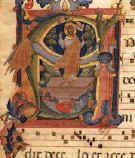
Réduisez en Mercure, comme il a été dit plus haut votre Chaux vive tirée de la Lune. C'est là notre Mercure secret [cette « chaux vive » doit correspondre au Mercure philosophique ; l'hypothèse d'un sulfate indécomposable à la chaleur est la plus probable. Plus exactement, cette chaux vive correspond au mélange du Mercure et du REbis : il s'agit alors du Compost philosophal]. Prenez donc quatre onces de notre chaux, extrayez le Mercure de la Lune comme vous l'avez fait plus haut. Vous recueillerez au moins trois onces de Mercure que vous mettrez dans un petit matras à long col comme il a été dit. Puis faites un amalgame d'une once de vrai Soleil [il s'agit de la teinture, c'est-à-dire du Soufre rouge ; le fer oligiste est une sorte de Soufre isolé] avec trois onces de mercure vulgaire et mettez-le sur le Mercure de la Lune [Le Mercure de la Lune cache un des secrets les mieux gardés des alchimistes : c'est là où ils confondu le premier Mercure et le Mercure commun, c'est-à-dire le Mercure vulgaire. Ce Mercure de la Lune est la matière sous laquelle se présente le CORPS de la Pierre qu'il faut marier à l'ÂME ou Soufre. cf. chapitre II]. Agitez fortement pour bien mélanger. Lutez le vaisseau avec soin et mettez-le dans le fourneau, en réglant le feu au premier, second et troisième degré. [il semblerait que le Mercure vulgaire soit le premier Mercure, c'est-à-dire le Mercure avant l'animation, c'est-à-dire avant l'introduction des éléments du REBIS. Le Soleil correspondrait alors au Soufre rouge ou teinture ; la Lune au Soufre blanc ou Corps de la Pierre.]
Au premier degré, la matière deviendra noire comme du charbon ; on dit alors qu'il y a éclipse de Soleil et de Lune. C'est la véritable conjonction qui produit un enfant, le Soufre, plein d'un sang tempéré. [de nombreux alchimistes parlent de cette eclipse en citant Lulle. Mais cette conjonction produit en fait l'AIRAIN des Sages , premier état du REBIS. Ce premier degré est l'un des stades de la conjonction telle que le Rosaire là rapporte.]
Après cette première opération, on continue par le feu du second degré jusqu'à ce que la matière soit grise. [selon Pernety, la couleur grise correspond au régime de Jupiter] Puis on passe au troisième degré jusqu'au moment où la matière apparaît parfaitement blanche. On augmente alors le feu jusqu'à ce que la matière devienne rouge comme du cinabre [il existe au moins trois définitions du cinabre] et soit réduite en cendres rouges. Tu pourras réduire cette Chaux en Soleil très pur, en faisant les mêmes opérations que pour la Lune. [cinabre, minium pris selon le temps comme de l'oxyde de plomb ou de l'oxyde d'arsenic ou encore un sel mercurique, rien de nouveau ici. Le secret semble être ici de réduire la chaux en Soleil ou en Lune. La chaux vive est dans cet état le Compost d'où il faut tirer le Soufre rouge ; le Soufre blanc a éét préparé dans des conditions semblables : c'est la raison pour laquelle, lorsque Latone accouche sur Délos, c'est d'abord Diane qui paraît et qui sert de parèdre pour Apollon. Cette séquence est invariable : autreemnt dit, dans la Grande Coction, il semble que l'on obtienne d'abord le Soufre blanc qui est le SEL incombustible voilé par le symbole de la salamandre, puis dans un temps ultérieur, le Soufre rouge.]
DE LA MANIÈRE DE CHANGER LA SUSDITE PIERRE EN UNE MÉDECINE QUI TRANSMUE TOUTE ESPÈCE DE MÉTAL EN VRAI SOLEIL ET VRAIE LUNE ET SURTOUT LE MERCURE VULGAIRE EN MÉTAL PLUS PUR QUE CELUI QUI SORT DES MINES
Après sa première résolution notre Pierre multiplie cent parties de matière préparée, et après la seconde, mille. L'on multiplie en dissolvant, coagulant, sublimant, fixant notre matière qui peut ainsi s'accroître indéfiniment en quantité et en qualité. [cette opération de la multiplication est un accroissement à partir d'un germe.]
Prenez donc de notre minière blanche [s'agit-il du Soufre blanc ? Ou bien de la matière « préparée au blanc » ?], dissolvez-la dans notre menstrue puant, qui est appelé vinaigre blanc dans notre Testament, au chapitre où nous disons: «Prends du bon vin bien sec, mets-y la Lune, c'est-à-dire l'Eau verte et C, c'est-à-dire du Salpêtre....» [l'eau verte doit être la même que l'eau divine ou eau de soufre ; il doit donc s'agir du lion vert. Quant au salpêtre ou Nitre des philosophes, il s'agit d'un hybride fait de vitriol et d'un sel de la sphère d'Aphrodite] Mais ne nous égarons pas ; prenez quatre onces de notre Chaux vive [le REBIS ou le Compost] et faites dissoudre dans notre menstrue [le Mercure], vous la verrez se résoudre en eau verte. [c'est bien cette opération qui semble décrite : la préparation du Lion vert] D'autre part dans treize onces de ce même menstrue puant vous dissoudrez quatre onces de mercure vulgaire bien lavé, et dès que la dissolution sera achevée, vous mélangerez les deux solutions [on doit donc d'une part mêler une solution obtenue à partir de la (minière blanche + menstrue puant) et d'une autre solution obtenue à partir de (chaux vive + menstrue + mercure commun) ; on voit que dans cette opération hermétique, on a les deux SOUFRES, le mercure commun et une autre substance dont la nature échappe ] ; mettez-les en un vase bien scellé, faites digérer au fumier de cheval pendant trente jours, puis distillez au bain-marie jusqu'à ce qu'il ne passe plus rien. Redistillez au feu de charbon afin d'extraire l'huile [l'huile, chez les alchimistes, est toujours synonyme de Soufre et de fixation] et alors la matière qui restera sera noire. Prenez celle-ci et distillez pendant deux heures sur les cendres dans un petit fourneau. Le vase étant froid, ouvrez-le et versez-y l'eau qui a été distillée ci-dessus au bain-marie. Lavez bien la matière avec cette eau. Puis distillez le menstrue au bain-marie ; recueillez toute l'eau qui passera, joignez-la à l'huile et distillez sur les cendres, comme il a été dit. Recommencez cette opération jusqu'au moment où la matière restera au fond du vaisseau, noire comme du charbon [plusieurs opérations semblent décrites à la fois ; et que Lulle revienne sur la première opération, celle de la dissolution.].
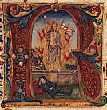
Fils de la science, tu auras alors la Tête de corbeau que les Philosophes ont tant cherchée, sans laquelle le Magistère ne peut exister. [cette tête de corbeau dissimule une autre énigme désespérante, du même genre que celle des colombes de Diane. Dans l'Atalanta, XLIV, nous avons été amenés à définir le corbeau comme l'autre nom que l'on donne au Laiton, à l'Airain, bref au premier état de l'amalgame philosophique. Et ce corbeau assure la transition entre le vautour et l'aigle. Dans le Filet d'Ariadne, de Sébastien Batsdorff, la tête de corbeau est désignée comme la mortification du Mercure : l'hypothèse est que la tête de corbeau dissimule donc le REBIS, prêt à être blanchi. Dans son Composé des Composés, Albert Le Grand parle de cette tête comme de la terre noire et fétide : c'est l'occasion où jamais de se souvenir de ces paroles de Basile Valentin : « blanchis le laiton et brûle tes livres », traduction impropre, nous l'avons dit maintes fois de « déchire ta terre feuillée » pour dire le dragon couvert d'écailles. Dans Huginus à Barma, on lit encore :
«l'indice de cette fécondation (c'est-à-dire de la conjonction des principes) est cet Aleph ou commencement ténébreux que les Anciens ont appelé tête du corbeau »
et c'est l'animation du Mercure qui semble résulter de cette opération de la dissolution. Tout seble donc indiquer que ce Caput corvis est le premier signe de la conjonction - cf. Donum Dei - Par quel hiéroglyphe caractériser l'opération de la jonction du Soufre naissant et du Caput corvis ? Il nous semble que le griffon constitue le seul symbole qui rende vraiment compte du processus en cours. Selon E. Canseliet ( Les Deux chiens in Deux Logis alchimiques ) :
« le vocable Khorassan, du grec Korax, corbeau, évoque l'origine de cette âme métallique...extraite de la partie ténébreuse...[désignée]...par l'expression tête de corbeau. »
Le Caput corvis représente-t-il une chaux métallique ? Est-ce une portion de Mercure alliée au Soufre ? Quoi qu'il en soit, la durée prescrite pour l'opération du Caput semble être de 40 jours vulgaires. C'est le laton non net de Basile Valentin qu'il faut blanchir. Le Cosmopolite l'a touché fort spirituellement par une fameuse allégorie en parlant de la purification et
de l'animation du Mercure :«Cela arrivera, si tu donnes à dévorer à notre vieillard l'or et l'argent, afin qu'il les consume, et que lui-même enfin devant aussi mourir soit brûlé ...» [Nouvelle Lumière Chymique]
Cosmopolite voulant par or et argent nommer le Soufre rouge qui assure la teinture de la Pierre et la Lune hermétique qui désigne le SEL incombustible. Synesius semble d'accord :
« et cette noirceur apparaît quelques fois en 40 jours, plus ou moins, selon la quantité, de la matière, et la bonne industrie de l'ouvrier qui aide de beaucoup à la séparation de la dite noirceur. Or mon fils, par la grâce de Dieu tu as dorénavant un Elément de notre Pierre qui est la terre noire, la tête de Corbeau des autres dite l'ombre obscure, sur laquelle terre comme sur un tronc tout le reste a fondement. Et cet Elément terrestre et sec, est nommé Laton , Taureau, Fèces noires, notre Métal, notre Mercure. »
Se pourrait-il, par ailleurs, que cette tête de corbeau soit l'écume noire qui vient à surnager dans la préparation du salpêtre dépuré ? Nous en doutons, car li faudrait alors placer le Laiton au 2ème oeuvre, ce qui paraît aller contre toute logique.]
C'est pourquoi, ô mon Fils, remémore-toi la divine Cène de Nôtre-Seigneur Jésus-Christ qui est mort, a été enseveli, et le troisième jour est revenu à la lumière sur la terre éternelle. Sache-bien, ô mon Fils, que nul être ne peut vivre s'il n'est mort tout d'abord. Prends donc ton corps noir, calcine-le dans le même vaisseau pendant trois jours, puis laisse refroidir. [on voit l'analogie classique avec le mystère de la Résurrection. Cf. la Chrysopée du Seigneur]
Ouvre-le et tu trouveras une terre spongieuse et morte, que tu conserveras jusqu'à ce qu'il soit nécessaire d'unir le corps à l'âme. [E. Canseliet, dans la préface du Mystère des Cathédrales, parle aussi d'une masse spongieuse et en parle comme d'une variété de plomb particulière. Dans le cas présent, il semble que l'on se trouve en présence d'une chaux métallique : elle renvoie à l'âme.]
Tu prendras l'eau qui a été distillée au bain-marie, tu la distilleras plusieurs fois de suite, jusqu'à ce qu'elle soit bien purifiée et réduite en une matière cristalline.
Imbibe donc ton corps qui est la Terre noire [issu du Mercure physique ou corporel] avec sa propre eau, l'arrosant peu à peu et chauffant le tout, jusqu'à ce que le corps devienne blanc et resplendissant. L'eau qui vivifie et qui clarifie a pénétré le corps [le Mercure a ouvert le métal qui se répand en chaux et se sublime dans le solvant des métaux]. Le vaisseau ayant été luté, tu chaufferas violemment pendant douze heures, comme si tu voulais sublimer le mercure vulgaire [c'est-à-dire faire évaporer le Mercure commun]. Le vase s'étant refroidi, tu l'ouvriras et tu y trouveras ta matière sublimée, blanche, c'est notre Terre Sigillée [là encore, plusieurs opérations sont décrites à la fois ; cette terre sigillée doit correspondre à la terre feuillée de Flamel. Cette terre feuillée correspond au dragon écailleux. Basile Valentin conseille à partir d'un certain moment, de « blanchir le laiton et de brûler les livres » ce qu'il faut comprendre par cabale en « rompant l'écorce » c'est-à-dire cette terre feuillée ou feuilletée. Sur cette terre feuillée, cf. Atalanta fugiens, VI ], c'est notre corps sublimé, élevé à une haute dignité, c'est notre Soufre, notre Mercure, notre Arsenic, [Geber appelle l'Arsenic CORPS. Lulle nomme ici les trois « principes principiants »] avec lequel tu réchaufferas notre Or, c'est notre ferment, notre chaux vive [le REBIS] et il engendre en soi le Fils du feu [cf. le poème du Phénix, attribué à Lactance] qui est l'Amour des philosophes.
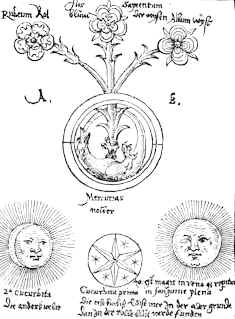
Mets cette matière dans un fort matras et verse par dessus un amalgame fait avec la Chaux vive de la première opération, celle que nous réduisions en argent. Cet amalgame se fait avec trois parties de mercure vulgaire [c'est-à-dire trois parties de Mercure commun] et une partie de notre Chaux [une partie de Soufre préparé ; Philalèthe l'appelle le dragon igné] ; vous mélangerez et vous chaufferez sur les cendres. Vous verrez la matière s'agiter, augmentez alors le feu et en quatre heures la matière deviendra sulfurée et très blanche. Lorsqu'elle aura été fixée, elle coagulera et fixera le Mercure ; une once de matière changera cent onces de Mercure en vraie Médecine ; elle opérera ensuite sur mille onces, et ainsi de suite à l'infini. [même redondance qu'au chapitre III ]
L'on prendra le soufre multiplié, on le placera dans un matras et l'on versera par-dessus l'huile [il est difficile de donner son nom vulgaire à cette huile. S'agit-il de la « vitreuse provision » dont parle E. Canseliet, de celle qui contient le Soufre sublimé ?] qui avait été mise de côté lors de la séparation des éléments.
On versera de l'huile jusqu'à ce que le Soufre soit mou. Puis on mettra fondre sur les cendres, en chauffant au second et troisième degré, jusqu'à la blancheur inclusivement. Alors on ouvrira le vaisseau et l'on trouvera une plaque cristalline, blanche. Pour l'essayer, mets-en un fragment sur une plaque chaude, et s'il coule sans produire de fumée il est bon. Alors projettes-en une partie sur mille de mercure et celui-ci sera complètement transmué en Argent. Mais si la médecine avait été infusible et n'avait pas coulé, mets-la dans un creuset [la référence à un creuset est importante à cause de l'intensité de la température qui permet, à la chaleur blanche, d'obtenir un sulfate fondu] et verse dessus de l'huile, goutte à goutte, jusqu'à ce que la médecine coule comme de la cire, et alors elle sera parfaite et transmuera mille parties de mercure et plus à l'infini.
Au nom du Seigneur, prends quatre onces de la lame susdite et dissous-la dans l'Eau de la Pierre, que tu as conservée. Lorsque la dissolution sera achevée, mets fermenter au bain-marie pendant neuf jours. Alors prends deux parties en poids de notre Chaux rouge et ajoute-les dans le vaisseau, tu mettras fermenter de nouveau neuf jours. Ensuite tu distilleras au bain-marie dans un alambic, puis sur les cendres, en réglant le feu au premier degré jusqu'au moment où la matière deviendra noire. C'est là notre seconde dissolution et notre seconde éclipse du Soleil avec la Lune, c'est là le signe de la vraie dissolution et de la conjonction du mâle avec la femelle [cette partie doit se situer dans la Grande coction, au 3ème oeuvre. Soit le etxte est redondant, soit il y a deux époques différentes décrites, dont l'une se rapporterait au 2ème oeuvre et l'autre, au 3ème. Ce n'est qu'une conjecture.].
Augmente le feu jusqu'au second degré, de façon que la matière devienne jaune. Ensuite on élèvera le feu au quatrième degré jusqu'à ce que la matière fonde comme de la cire et qu'elle soit d'une couleur hyacinthe. C'est alors une matière noble et une médecine royale qui guérit promptement toutes les maladies ; elle transmue toute espèce de métal en or pur meilleur que l'or naturel.
Maintenant rendons grâces au Sauveur glorieux qui dans la gloire des cieux règne un et trois dans l'éternité.
Nous avons démontré que tout ce que renferme ce traité est véritable, car nous avons vu de nos propres yeux, nous avons opéré nous-mêmes, nous avons touché de nos propres mains. Maintenant nous allons sans allégories et brièvement résumer notre Œuvre.
Nous prenons donc la Pierre [il s'agit du Corps parfait, symboe du Soufre rouge] que nous avons dite, nous la sublimons avec l'aide de la nature et de l'art, nous la réduisons en Mercure. A ce Mercure on ajoute le Corps blanc [il s'agit du SEL ou CORPS de la Pierre : il est vraisemblable qu'il s'agisse d'argile pure : c'est la minière blanche du chapitre VIII] qui est d'une nature semblable, et on cuit jusqu'à ce qu'on ait préparé la vraie minière [par « vraie minière », on doit entendre le REBIS ou pierre des philosophes].
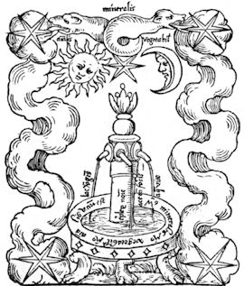
Cette minière se multipliera à votre gré. La matière sera de nouveau réduite en Mercure, que vous dissoudrez dans notre Menstrue jusqu'à ce que la Pierre devienne volatile et séparée de tous ses éléments [il y a là encore une énigme, car si l'on suit notre auteur, on a des phases découpées du magistère. L'une où l'on prépare les Soufres qui sont cuits et dépurés ; puis une autre où l'on mélange deux solutions qui en donne une troisième, laquelle contient la vraie minière de la Pierre. Puis ce dernier passage semble montrer que la pierre des philoosphes est isolée et redissoute dans le menstrue : toutes ces opérations se font par la voie humide et échappent à la raison ; soit donc notre auteur s'exprime par allégorie, soit il s'agit d'une pure chimère. Les premiers chapitres semblent contenir un fond de vérité quant à ce que représente réellement le Mercure vulgaire (commun) et le Mercure physique]. Enfin on purifiera parfaitement le corps et l'âme [par la dissolution dont l'allégorie est la putréfaction ou éclipse du soleil et de la lune]. Une chaleur naturelle et tempérée permettra ensuite de réussir la conjonction du corps et de l'âme [c'est surout un refroidissment très lent et un temps de coction qui peut être fort log, qui est le gage de la cristallisation]. La Pierre deviendra minière ; on continuera le feu jusqu'à ce que la matière devienne blanche, nous l'appelons alors Soufre et Mercure des Philosophes ; c'est alors que par la violence du feu, le fixe devient volatil, en tant que le volatil se sera débarrassé de ses principes grossiers et se sera sublimé plus blanc que neige. On jettera ce qui reste au fond du vaisseau, car ce n'est bon à rien. Prenez alors notre Soufre qui est l'huile dont on a déjà parlé et vous le multiplierez dans l'alambic jusqu'à ce qu'il soit réduit en une poudre plus blanche que neige. On fixera les poudres multipliées par la nature et par l'art, avec de l'Eau, jusqu'à ce qu'à l'essai par le feu, elles coulent sans fumée comme de la cire [Lulle semble ici parler de la préparation de l'alkali fixe. Voilà d'ailleurs la plus grande difficulté qui survienne dans la lecture des textes : la redondance et l'intrication des phases de l'oeuvre ].
Il faut alors ajouter l'eau de la première solution [il s'agit du Mercure mêlé au Corps blanc] ; tout s'étant dissous, on y mettra quelque chose de jaune qui est l'or [le Soufre], on unira et on distillera tout l'esprit. Enfin on chauffera au premier, second, troisième et quatrième degré [cf. chapitre II] jusqu'à ce que la chaleur fasse apparaître la vraie couleur hyacinthe, et que la matière fixe soit fusible. [notons que le 3ème et surtout le 4ème degré de feu sont impraticables par la voie humide] Tu projetteras cette matière sur mille parties de mercure vulgaire et il sera transmué en or fin.
Prenez une once de Lune fine coupellée et trois onces de mercure [il doit être question d'une variété de Mercure appelée communément huile de tartre]. Amalgamez, en chauffant d'abord l'argent en lamelles dans un creuset et en y ajoutant ensuite le mercure ; remuez avec une baguette, tout en continuant à bien chauffer. On mettra ensuite cet amalgame dans du vinaigre avec du sel ; on broyera le tout avec un pilon dans un mortier de bois, tout en lavant et enlevant les impuretés. On cessera quand l'amalgame sera parfait. Puis on lavera avec de l'eau ordinaire chaude et limpide, puis on passera à travers un linge bien propre.
Ce qui restera sur le linge étant la partie la plus essentielle du corps, on le mélangera avec trois parties de sel, en broyant bien et en lavant. On calcinera enfin pendant douze heures. On recommencera à broyer avec du sel, et cela par trois fois, en renouvelant chaque fois le sel. Alors on pulvérisera la matière de manière à obtenir une poudre impalpable ; on lavera à l'eau chaude jusqu'à ce que toute saveur salée ait disparu. Enfin on passera à travers un filtre de coton, on desséchera, et l'on aura la Chaux blanche. On la mettra en réserve, pour s'en servir lorsqu'on en aura besoin, de peur que l'humidité ne l'altère. [la chaux blanche semble désigner le principe dit « humide » ou féminin, c'est-à-dire le patient ou SOUFRE blanc. Revoyez ici ce que nous avons dit de la préparation des aluns.]
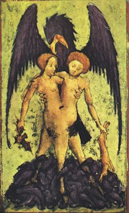
Prenez du bon tartre, dont la cassure soit brillante, calcinez-le au fourneau à réverbère pendant dix heures ; ensuite vous le mettrez sur une plaque de marbre après l'avoir pulvérisé et vous le laisserez dans un lieu humide, il se résoudra en un liquide huileux. Lorsqu'il sera entièrement liquéfié, on le passera à travers un filtre de coton. Vous le conserverez soigneusement, il vous servira à imbiber votre chaux [c'est la préparation du carbonate de potasse hydraté appelé aussi huile de tartre par défaillance. Il va servir à précipiter la terre de l'alun tandis qu'un véritable tartre vitriolé se formera].
MENSTRUE PUANT POUR RÉDUIRE NOTRE CHAUX VIVE EN MERCURE, APRÈS L'AVOIR DISSOUTE LORSQU'ELLE AURA ETE DEJA IMBIBEE D'HUILE DE TARTRE
Prenez deux livres de vitriol, une livre de salpêtre et trois onces de cinabre. On rougit le vitriol, on le pulvérise, puis on ajoute le salpêtre et le cinabre, on broye toutes ces matières ensemble, et on met dans un appareil distillatoire bien luté.
[Lulle donne ici l'un des procédés de préparation du bichlorure de mercure ou sublimé corrosif. Ce sel était connu d'Avicenne et aussi de Rhasès (Xe siècle). Gerber donne la recette suivante :
« Prenez une livre de mercure, deux livres de vitriol, une livre d'alun de roche calciné, une livre et demi de sel commun, et un quart de salpêtre, mélangez le tout, et soumettez-le à la sublimation. Recueillez le produit dense et blanc qui s'attache à la partie supérieure du vase. Si le produit de la première sublimation est sale et noirâtre, ce qui peut arriver, il faut le soumettre à une seconde sublimation ».]
On distille d'abord à feu lent, c'est de toute nécessité, comme le savent ceux qui ont fait cette opération. Cette eau distillera en abandonnant ses impuretés qui resteront au fond de la cucurbite et vous aurez ainsi cet excellent menstrue. [cf. là-dessus la section du tartre vitriolé]
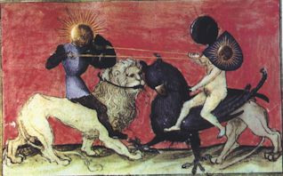
Prenez trois livres de vitriol romain rouge [cf. chapitre II. Ici, l'étiquette de vitriol romain est précisée, cf. Atalanta, XXV], une livre de salpêtre, trois onces de cinabre, broyez toutes ces matières ensemble sur le marbre. Puis mettez-les dans un grand et solide matras, ajoutez-y de l'Eau-de-vie rectifiée sept fois, puis scellez parfaitement le vaisseau et mettez-le pendant quinze jours dans du fumier de cheval. Ensuite on distillera doucement pour que toute l'eau passe dans le récipient. Puis on augmentera le feu jusqu'à ce que le chapiteau soit porté au blanc ; on laissera ensuite refroidir. On enlèvera le récipient que l'on fermera parfaitement avec de la cire et on le conservera. Remarquez que ce menstrue doit être rectifié sept fois, en rejetant chaque fois le résidu. Après cela seulement il sera bon pour l'œuvre.
FIN
¯
Nous donnons ici un autre texte, qui semble congénère du précédent. Inutile de dire que R. Lulle n'en est point l'auteur. Comme plusieurs auteurs font référence à la Lumière des Mercures, nous l'avons inséré à la suite de la Clavicule. Ce traité peut être trouvé à la Ferguson Young British Lib à la côte suivante :
1498.1 Alexandre Toussaint de LIMOJON, Sieur de Saint-Didier [1630-].
Lettre d'un philosophe, sur le secret du grand oeuvre. Ecrite au sujet des instructions qu'Aristée à laissées à son fils, touchant le magistere philosophique. Le nom de l'auteur est en latin dans cet anagramme. Dives sicut ardens, S.[il s'agit de la Lettre de Limojon, qui est inséparable du Triomphe Hermétique.]
12° Paris: chez Laurent d'Houry 1688
Ferguson Young British Lib.[contient :-
2. Verba Aristei Patris ad filium.
3. La Lumiere des Mercures, Extraite de Raymund Lulle.
4. Le Chemin du ciel chymique, par Jacques Toll.]On trouve encore un exrtait du traité dans le n° 9 de la revue la Tourbe des Philosophes. Le texte en a été donné aussi dans la revue l'Alchimie, n°3, 46-48, 2000 [P.A.N.]
Les textes se référant à ce petit traité du pseudo-Lulle sont cités dans la voie humide. Armand Barbault semblait manifester une confiance excessive dans les dires de l'anonyme qui a signé le texte de la Lumière des Mercures :
« C'est que je n'oublie pas ce que disaient les alchimistes et notamment Raymond Lulle, quand ils affirmaient que l'or a un corps mais aussi une âme et lorsqu'ils admettaient que cette âme de l'or était sa couleur, cette dernière contenant alors toutes les vertus thérapeutiques du métal. » [L'Or du Millième Matin, J'ai Lu, 1969]
Peut-être Armand Barbault a-t-il confondu l'Or avec le Corps parfait qui se réfère à toute autre chose...Pour d'autres précisions sur R. Lulle, cf. l'Elucidation du Testament. Il y a d'ailleurs un évident malentendu entre les recherches qu'aurait pratiquées R. Lulle sur l'eau-de-vie et le texte de la Lumière des Mercures, du pseudo-Lulle.
site consulté : [http://histoirepharmacie.free.fr/main02-02.htm]
« Au XIII° siècle, des doctrines nouvelles apparaissent. Albert le Grand (1193-1280), voyageur infatigable, curieux de tout, en particulier de physique et de chimie, vulgarisateur d'Aristote expose sa doctrine lors de harangues aux Parisiens sur la place qui porte actuellement son nom, la place Maubert (Maître Albert). Provincial des Dominicains, il aura pour élève, Thomas d'Aquin, alchimiste, théologien, philosophe. Les reliques de Saint Thomas reposent sous le maître-autel de l'église des Jacobins de Toulouse, église de la maison mère des Dominicains. Albert le Grand fait connaître divers composés chimiques: potasse caustique, acétates de plomb et de cuivre.Dans les mêmes années, Raymond Lulle étudie la rectification de l'esprit de vin. Arnaud de Villeneuve, à la suite de l'école de Salerne, introduit dans la médecine l'Eau-de-Vie (1260) qu'il dénomme Eau de l'Immortalité dont il fait une véritable panacée. L'Eau-de-Vie devient un remède vendu exclusivement par les apothicaires contre les maux les plus divers: douleurs, plaies infectées, morsures. Douée dit-on du pouvoir de rajeunissement, elle prend le nom d'aqua vitae. »
Or, cette eau-de-vie n'a - cf. voie humide - rien à voir avec celle dont il est question, aussi bien dans la Lumière des Mercures d'ailleurs, que dans la Clavicule. Cet extrait encore, du même site :
« A Salerne, vers 1100, apparaît l'alcool utilisé sous deux formes: aqua ardens à 60° et aqua vitae à 90°. Ce nouveau solvant devait être largement utilisé pour les préparations de remèdes et de parfums. Nombreux seront les vocables pour le désigner : âme du vin, eau flagrante, permanente ou éternelle, esprit subtil, lumière des mercures, prime essence, quintessence. »
Là encore, confusion complète. Le compilateur ne sait pas que les alchimistes ont toujours appelé leur Mercure une « eau-de-vie », leur eau permanente. Il ne sait pas que l'esprit subtil est le Mercure philosophique et que l'Âme du vin n'est autre que le Soufre sublimé dans le dissolvant des métaux. Que c'est cette âme même qui porte le nom de quintessence.
Extraite de Raymond Lulle
Ce petit Traité fut envoyé par Raymond Lulle au Roy de la Grande Bretagne, pour lui servir de lumière à entendre ce qu'il y avait de plus caché dans ses autres Livres. [cf. l'introduction où il est montré que le roi d'Angleterre à qui le pseudo-Lulle a envoyé ce livre n'a jamais existé]
Prenez, au nom de Dieu, de la matière [s'agit-il de la chaux de Lune du chapitre II de la Clavicule ? nous renverrons le lecteur à un traité : De la composition du Soufre et du menstrue végétable ou l'Or potable, suivant la pratique de Raymond Lulle donné en 1545, à un Seigneur Français, par le Médecin la Brosse [Théâtr. Chymiq., tom. VI, p. 288] qui explique que cette matière serait « du meilleur vin rouge ». Cf. là-dessus notre voie humide où plusieurs procédés sont donnés qui se rapportent à Lulle.] que vous savez et la mettez en putréfaction au bain marie pendant vingt jours au moins, afin que les parties se trouvent mieux séparées. Ensuite vous en tirerez par la distillation au bain marie avec un feu très doux, l'eau ardente [aqua sicca ?] que vous rectifierez jusqu'à ce qu'il n'y ait plus de flegme et vous mettrez à part cette eau rectifiée et vous en ôterez encore une fois le flegme par la distillation sur les cendres jusqu'à ce qu'il vous paraisse au fond du vaisseau une matière comme de la poix fondue [cette matière peut être du foie de soufre, c'est-à-dire du polysulfure de potasium].
Mettez à part ce flegme et par une autre distillation sur les cendres vous ôterez encore le flegme de votre eau jusqu'à ce qu'il ne reste que de la matière au fond du vaisseau et sur cette matière vous y verserez du même flegme que vous avez gardé, jusqu'à quatre doigts au dessus. Après mettez-là circuler pendant deux jours au bain marie et ensuite un jour sur les cendres, en sorte qu'elle bouille doucement. Trous trouverez que votre flegme aura pris beaucoup de couleur, lequel vous verserez par inclination dans un autre vaisseau et vous mettrez encore du nouveau flegme qui sera resté de celui que vous aurez mis à part, que vous remettrez pendant deux jours au bain marie, et aussi pendant un jour sur les cendres et vous verserez encore par inclination ce flegme qui sera coloré avec le précédent et continuez à mettre du nouveau flegme jusqu'à ce qu'il ne se colore plus. S'il vous manquait du flegme vous prendrez celui qui est coloré et vous en séparerez la moitié ou le tiers par la distillation au bain marie et de cette moitié que vous aurez tiré, vous vous en servirez comme du premier flegme. Alors vous trouverez au fond de votre vaisseau la terre blanche [il peut s'agir de carbonate de potasse, c'est-à-dire de l'alkali fixe] et le flegme aura tiré avec lui toute l'huile. Si vous voulez les séparer, vous le pouvez faire par la distillation au bain marie, jusqu'à ce que tout votre flegme soit dans votre récipient et que l'huile demeure très rouge au fond du vaisseau que vous garderez pour rubéfier vos mercures.
Prenez donc de cette terre blanche et versez sur icelle de la première eau ardente [ce qui semble correspondre, cf. supra, à de l'aqua sicca] que vous avez réservée, en sorte qu'il y en ait deux doigts au dessus de la dite terre: et mettez la bouillir doucement pendant un jour sur les cendres et après vous séparerez l'eau et ladite terre en la distillant sur les cendres, laquelle vous réserverez. Rejetez encore d'autre eau ardente deux doigts au dessus de cette terre et mettez-là sur les cendres pendant un jour naturel et redistillez encore sur les cendres. Mettez cette eau avec la même que vous venez de mettre à part, et continuez à faire la même chose jusqu'à ce qu'il n'y ait plus d'esprit dans votre terre, et qu'il soit tout passé avec votre eau ardente. Ce que vous connaîtrez quand votre poudre sera impalpable, et en en mettant un peu sur une lame de fer rouge, qu'elle ne produise aucune fumée [il s'agit alors d'un sel réputé incombustible]. Vous mettrez cette poudre en digestion à la lampe en sorte que le feu soit continuel pendant dix jours, et mettez dessus ladite poudre votre eau qui a tout tiré l'esprit, en sorte qu'il y ait un peu de cette eau au-dessus, et mettez en digestion à la lampe pendant un jour naturel. Et après vous tirerez par la distillation au bain cette eau qui aura laissé son esprit dans cette terre, et remettrez de cette première eau dans laquelle est l'esprit, un doigt au-dessus de cette terre, et séparerez ensuite par distillation au bain-marie cette terre qui demeurera sans esprit. Continuez ces digestions et distillations jusqu'à ce que la terre ait consommé tout son esprit, ce que vous connaîtrez en mettant cette terre sur une lame rougie qui fera dissiper presque toute cette terre en fumée, laquelle terre vous mettrez en digestion pendant six jours, à la lampe, après quoi vous augmenterez le feu, en sorte que cette terre se sublime et s'élève aux côtés du vaisseau où est le Mercure végétable : et ce qui sera demeuré au fond du vaisseau est la terre damnée [c'est Aphrodite qui tient ce SEL fixe. Il faut remarquer que la terre vitrifiable correspond à la terre damnée ou tête morte ; la terre mercurielle est l'esprit ou le Mercure des substances métalliques (une chaux métallique en totale dissolution) ; la terre inflammable correspond à l'huile ou Soufre] et de nul usage dans votre vaisseau. Vous ramasserez promptement ce Mercure pendant qu'il est récent, et vous le mettrez en digestion avec ladite terre sur les cendres pendant 2 jours ; et il s'en fera une eau qui dissoudra tous les métaux sans corrompre leur forme, et c'est ce que nous appelons le Mercure végétal [substance semblable au mercure vulgaire, c'est-à-dire au Mercure commun].
Prenez une once de ce menstrue, et mettez une demi-once de soleil en feuille ou poudre, et fermez exactement le vaisseau. Mettez-le en digestion au bain-marie pendant deux jours, et votre menstrue se teindra de la couleur du soleil ; mettez le encore sur les cendres pendant un jour naturel et vous verrez qu'il se colorera d'avantage, et ensuite vous retirerez par inclinaison ce menstrue dans un autre vaisseau que vous fermerez fort exactement ; vous remettrez de nouveau menstrue sur ledit soleil, et le mettez derechef pendant un jour à feu de lampe, et il se colorera. De plus vous le retirerez par inclinaison et le remettrez avec l'autre déjà coloré, en continuant à remettre de nouveau menstrue. Vous ferez la même chose jusqu'à ce qu'il ne se colore plus, et il vous demeurera dans le fond une terre du soleil sans couleur, qui pourra vous être utile pour les Opérations particulières, à cause de la séparation des éléments.
Nota, que pour une partie de Lune, il faut trois parties de menstrue, [cf. Clavicule, chapitre IX] et que le temps de la digestion soit plus long d'une huitième partie.
Prenez donc ce menstrue coloré dans lequel est ce soufre du Soleil, et qui contient une grande partie du Mercure [description de l'animation du Mercure] : mettez-le en circulation pendant trente jours sur les cendres dans deux vaisseaux de rencontre fait exprès, et qu'il y en ait dans chacun un égal poids, et à cause qu'il y a une plus grande partie de Mercure que de soufre, il se formera au fond de chacun vaisseau une pierre, et l'eau qui montait avec la couleur ne montera plus que toute blanche, et vous retirerez doucement par inclinaison ce menstrue dans un vaisseau, et vous mettrez doucement les deux pierres dans un autre vaisseau à col long. Prenez garde qu'elles ne prennent l'air, et que cela ne leur nuise, et mettez-le au bain-marie pendant trois jours, ces pierres se dissoudrons en une eau très rouge ; et vous retirerez le vaisseau que vous mettrez en digestion pendant cinq jours au feu de lampe, et cette matière se formera encore en pierre : vous la remettrez ensuite au bain-marie pendant un jour naturel, et elle se dissoudra encore en une eau très rouge et transparente comme un rubis, laquelle vous remettrez encore pendant deux jour au feu de lampe, et cette matière se résoudra comme la cire très fondante ; si vous en projetez une partie sur dix parties de Lune, elle se convertira en très bon Soleil, et si vous la faites encore dissoudre et coaguler tant qu'elle ne puisse plus se coaguler, une partie convertira trente parties de Lune en Soleil. [la fin du texte est très proche de la Clavicule]
FIN